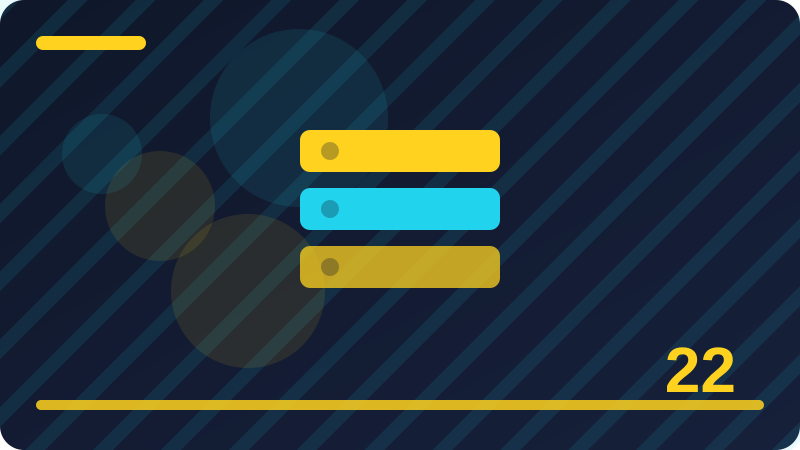

Chapter 22: Events: Listening and Responding

Section 1: What an Event Is
This section focuses on what an event is. At first it may look like a small detail, but small details are what make a page feel alive and helpful instead of frozen and confusing. When you understand this idea well, you will spot it in other people's code and you will know exactly where to start when you need it in your own project. Read the explanation carefully, study the example line by line, and then change one value to see what happens. Learning by doing is far stronger than learning by memorising.
Think of what an event is as a conversation between your code and the page. Your code asks a question or gives an instruction, and the page responds with a value, a change, or an event. That conversation follows rules, and those rules are the same every time, which is good news for a learner. Once you learn the pattern for one case, you can reuse it in many other cases with only small changes. Notice the pattern in the example below, not just the exact words, because the pattern is what you will reuse.
Look now at the code example in this section. Read it from top to bottom, and for each line ask yourself what it does and why it is there. The first lines set up the values or elements you need. The middle lines do the main work for what an event is. The last lines show the result, usually with console log, so you can see the outcome in your browser console. Try running the code exactly as written first, so you know the starting point works. Then change one small thing, such as a message, a number, or a name, and run it again. Watching that one change alter the result teaches you more than reading ten extra pages.
Watch out for two traps when you practise what an event is. The first trap is copying code without understanding it, which feels fast but leaves you stuck when you need to adapt it. The second trap is changing many things at once when something fails, which makes it impossible to know which change fixed or broke it. Change one thing, test it, and only then change the next thing. Keep your test examples small and your variable names clear. Clear names act like labels, and labels make debugging far less stressful, especially when you return to code you wrote yesterday.
Your practice task for this section is simple and short. Run the example, change one value, and observe the result. Then write a second, slightly different example that uses the same idea for a different purpose. Keep both examples in a practice file with a comment at the top saying what each one demonstrates. Over time that file becomes a library of patterns you trust, because you built and tested each one yourself. That library will help you far more than a long list of notes you never ran, especially when you start a real project.
const button = document.querySelector("button");
button.addEventListener("click", function () {
console.log("Button was clicked");
});Check: How would you explain what an event is in your own words, and what small example would you run to prove that your explanation is correct?
Section 2: Listening with addEventListener
Here you will explore listening with addeventlistener in plain language. The goal is not to impress you with jargon, but to give you a clear mental picture you can carry into your next project. Think of this section as one building block. On its own it is simple, and combined with the blocks around it, it lets you build features that feel professional. Work through the example slowly, ask what each line is for, and test your understanding with the check question at the end.
The core idea behind listening with addeventlistener is that JavaScript gives you a simple, repeatable way to describe what should happen, and the browser then carries out that instruction in order. You do not need to understand every internal detail of the browser to use it well. You need to know what goes in, what comes out, and what changes as a result. When you can explain those three things in one or two sentences, you have understood the idea well enough to use it. If you cannot, read the example again and trace each step on paper before you move on, because guessing at this stage usually creates confusion later.
The example below is deliberately short. Short examples are easier to test, easier to break safely, and easier to fix. Start by copying it into your browser console or a small test page and running it unchanged. Check that the output matches what you expected. Then experiment in small steps. Rename a variable to something clearer and see that the code still works. Change a value and predict the new output before you run it. If your prediction is wrong, that is useful information, not failure. It shows you exactly which part of the idea needs another look.
Beginners often struggle with listening with addeventlistener not because it is hard, but because they try to learn too much at once. If this section feels heavy, split your practice into two short sessions. In the first session, just read and run the example. In the second session, try to write a similar example from memory, using the original only when you get stuck. Also remember that error messages are help, not punishment. They point to a line number and a reason, and reading them carefully usually leads you straight to the fix.
For practice, build a tiny variation of this section's example in your own words. Use your own messages, your own names, and your own numbers, so the result feels like yours. Then add one extra step that was not in the original, such as logging a second value, checking a condition, or repeating the action twice. If it works, write a one-sentence note explaining why it works. If it does not work, note the error and what you changed to fix it. That short note becomes a personal reference you can reuse, and it proves you understood listening with addeventlistener, not just copied it.
const input = document.querySelector("input");
input.addEventListener("input", function (event) {
console.log("Typed:", event.target.value);
});Check: How would you explain listening with addeventlistener in your own words, and what small example would you run to prove that your explanation is correct?
Section 3: Removing an Event Listener
In this section you will learn about removing an event listener. This is a practical skill you will use again and again when you build real pages, because most JavaScript work is about reading what is on the page, responding to the user, and changing something in a clear and predictable way. Do not rush past the idea. Take a moment to say it in your own words first, then look at the example, then try a small change yourself. That slow loop of reading, predicting, and testing is how beginners turn a new term into a tool they can actually use.
To understand removing an event listener, break it into three questions. First, what are you working with, and where does it come from. Second, what action do you want to perform on it. Third, how will you know that it worked. Answering those questions before you write code saves time and prevents many common errors. Beginners often jump straight to typing, then wonder why nothing changes. A short pause to plan, even thirty seconds, makes the code easier to write, easier to read, and much easier to fix when something goes wrong.
Study the code example as if you were explaining it to a friend. The opening lines prepare everything the example needs, the central lines carry out removing an event listener, and the closing lines make the result visible. If any line is unclear, isolate it. Run just that part, or add a console log before and after it, so you can see what changed. This habit of isolating one line at a time will help you for your whole programming life. It turns a mysterious error into a small, answerable question about one specific step.
A common mistake with removing an event listener is to assume it worked without checking. Always verify the result, either in the console, on the page, or with a simple log message. Another common mistake is to use a name that does not exist, or to run code before the thing it needs is ready. If you see an error about something being null or undefined, it usually means your code looked for something that was not there yet, or was spelled differently. Read the error message slowly, check the spelling, and check the order of your code. Most beginner errors are spelling, timing, or order errors, not deep mysteries.
Now try it yourself. Start with the example, then rewrite it without looking, changing the details to fit a small idea of your own. Perhaps use a favourite word, a real task from your day, or a tiny feature for a practice page. Test it, fix any errors calmly, and then explain the result out loud as if teaching someone else. Teaching is a powerful test of understanding. If you can explain removing an event listener simply, you know it. If you get stuck while explaining, you have found the exact part to review, which is a useful and honest place to be.
const list = document.querySelector("ul");
list.addEventListener("click", function (event) {
if (event.target.tagName === "LI") {
console.log("Clicked:", event.target.textContent);
}
});Check: How would you explain removing an event listener in your own words, and what small example would you run to prove that your explanation is correct?
Section 4: The Click Event
This section focuses on the click event. At first it may look like a small detail, but small details are what make a page feel alive and helpful instead of frozen and confusing. When you understand this idea well, you will spot it in other people's code and you will know exactly where to start when you need it in your own project. Read the explanation carefully, study the example line by line, and then change one value to see what happens. Learning by doing is far stronger than learning by memorising.
Think of the click event as a conversation between your code and the page. Your code asks a question or gives an instruction, and the page responds with a value, a change, or an event. That conversation follows rules, and those rules are the same every time, which is good news for a learner. Once you learn the pattern for one case, you can reuse it in many other cases with only small changes. Notice the pattern in the example below, not just the exact words, because the pattern is what you will reuse.
Look now at the code example in this section. Read it from top to bottom, and for each line ask yourself what it does and why it is there. The first lines set up the values or elements you need. The middle lines do the main work for the click event. The last lines show the result, usually with console log, so you can see the outcome in your browser console. Try running the code exactly as written first, so you know the starting point works. Then change one small thing, such as a message, a number, or a name, and run it again. Watching that one change alter the result teaches you more than reading ten extra pages.
Watch out for two traps when you practise the click event. The first trap is copying code without understanding it, which feels fast but leaves you stuck when you need to adapt it. The second trap is changing many things at once when something fails, which makes it impossible to know which change fixed or broke it. Change one thing, test it, and only then change the next thing. Keep your test examples small and your variable names clear. Clear names act like labels, and labels make debugging far less stressful, especially when you return to code you wrote yesterday.
Your practice task for this section is simple and short. Run the example, change one value, and observe the result. Then write a second, slightly different example that uses the same idea for a different purpose. Keep both examples in a practice file with a comment at the top saying what each one demonstrates. Over time that file becomes a library of patterns you trust, because you built and tested each one yourself. That library will help you far more than a long list of notes you never ran, especially when you start a real project.
document.addEventListener("keydown", function (event) {
console.log("Key pressed:", event.key);
});Check: How would you explain the click event in your own words, and what small example would you run to prove that your explanation is correct?
Section 5: Mouse Enter and Mouse Leave
Here you will explore mouse enter and mouse leave in plain language. The goal is not to impress you with jargon, but to give you a clear mental picture you can carry into your next project. Think of this section as one building block. On its own it is simple, and combined with the blocks around it, it lets you build features that feel professional. Work through the example slowly, ask what each line is for, and test your understanding with the check question at the end.
The core idea behind mouse enter and mouse leave is that JavaScript gives you a simple, repeatable way to describe what should happen, and the browser then carries out that instruction in order. You do not need to understand every internal detail of the browser to use it well. You need to know what goes in, what comes out, and what changes as a result. When you can explain those three things in one or two sentences, you have understood the idea well enough to use it. If you cannot, read the example again and trace each step on paper before you move on, because guessing at this stage usually creates confusion later.
The example below is deliberately short. Short examples are easier to test, easier to break safely, and easier to fix. Start by copying it into your browser console or a small test page and running it unchanged. Check that the output matches what you expected. Then experiment in small steps. Rename a variable to something clearer and see that the code still works. Change a value and predict the new output before you run it. If your prediction is wrong, that is useful information, not failure. It shows you exactly which part of the idea needs another look.
Beginners often struggle with mouse enter and mouse leave not because it is hard, but because they try to learn too much at once. If this section feels heavy, split your practice into two short sessions. In the first session, just read and run the example. In the second session, try to write a similar example from memory, using the original only when you get stuck. Also remember that error messages are help, not punishment. They point to a line number and a reason, and reading them carefully usually leads you straight to the fix.
For practice, build a tiny variation of this section's example in your own words. Use your own messages, your own names, and your own numbers, so the result feels like yours. Then add one extra step that was not in the original, such as logging a second value, checking a condition, or repeating the action twice. If it works, write a one-sentence note explaining why it works. If it does not work, note the error and what you changed to fix it. That short note becomes a personal reference you can reuse, and it proves you understood mouse enter and mouse leave, not just copied it.
const form = document.querySelector("form");
form.addEventListener("submit", function (event) {
event.preventDefault();
console.log("Form handled in JavaScript");
});Check: How would you explain mouse enter and mouse leave in your own words, and what small example would you run to prove that your explanation is correct?
Section 6: Mouse Move and Mouse Position
In this section you will learn about mouse move and mouse position. This is a practical skill you will use again and again when you build real pages, because most JavaScript work is about reading what is on the page, responding to the user, and changing something in a clear and predictable way. Do not rush past the idea. Take a moment to say it in your own words first, then look at the example, then try a small change yourself. That slow loop of reading, predicting, and testing is how beginners turn a new term into a tool they can actually use.
To understand mouse move and mouse position, break it into three questions. First, what are you working with, and where does it come from. Second, what action do you want to perform on it. Third, how will you know that it worked. Answering those questions before you write code saves time and prevents many common errors. Beginners often jump straight to typing, then wonder why nothing changes. A short pause to plan, even thirty seconds, makes the code easier to write, easier to read, and much easier to fix when something goes wrong.
Study the code example as if you were explaining it to a friend. The opening lines prepare everything the example needs, the central lines carry out mouse move and mouse position, and the closing lines make the result visible. If any line is unclear, isolate it. Run just that part, or add a console log before and after it, so you can see what changed. This habit of isolating one line at a time will help you for your whole programming life. It turns a mysterious error into a small, answerable question about one specific step.
A common mistake with mouse move and mouse position is to assume it worked without checking. Always verify the result, either in the console, on the page, or with a simple log message. Another common mistake is to use a name that does not exist, or to run code before the thing it needs is ready. If you see an error about something being null or undefined, it usually means your code looked for something that was not there yet, or was spelled differently. Read the error message slowly, check the spelling, and check the order of your code. Most beginner errors are spelling, timing, or order errors, not deep mysteries.
Now try it yourself. Start with the example, then rewrite it without looking, changing the details to fit a small idea of your own. Perhaps use a favourite word, a real task from your day, or a tiny feature for a practice page. Test it, fix any errors calmly, and then explain the result out loud as if teaching someone else. Teaching is a powerful test of understanding. If you can explain mouse move and mouse position simply, you know it. If you get stuck while explaining, you have found the exact part to review, which is a useful and honest place to be.
const button = document.querySelector("button");
button.addEventListener("click", function () {
console.log("Button was clicked");
});Check: How would you explain mouse move and mouse position in your own words, and what small example would you run to prove that your explanation is correct?
Section 7: Keyboard Events: Key Down
This section focuses on keyboard events: key down. At first it may look like a small detail, but small details are what make a page feel alive and helpful instead of frozen and confusing. When you understand this idea well, you will spot it in other people's code and you will know exactly where to start when you need it in your own project. Read the explanation carefully, study the example line by line, and then change one value to see what happens. Learning by doing is far stronger than learning by memorising.
Think of keyboard events: key down as a conversation between your code and the page. Your code asks a question or gives an instruction, and the page responds with a value, a change, or an event. That conversation follows rules, and those rules are the same every time, which is good news for a learner. Once you learn the pattern for one case, you can reuse it in many other cases with only small changes. Notice the pattern in the example below, not just the exact words, because the pattern is what you will reuse.
Look now at the code example in this section. Read it from top to bottom, and for each line ask yourself what it does and why it is there. The first lines set up the values or elements you need. The middle lines do the main work for keyboard events: key down. The last lines show the result, usually with console log, so you can see the outcome in your browser console. Try running the code exactly as written first, so you know the starting point works. Then change one small thing, such as a message, a number, or a name, and run it again. Watching that one change alter the result teaches you more than reading ten extra pages.
Watch out for two traps when you practise keyboard events: key down. The first trap is copying code without understanding it, which feels fast but leaves you stuck when you need to adapt it. The second trap is changing many things at once when something fails, which makes it impossible to know which change fixed or broke it. Change one thing, test it, and only then change the next thing. Keep your test examples small and your variable names clear. Clear names act like labels, and labels make debugging far less stressful, especially when you return to code you wrote yesterday.
Your practice task for this section is simple and short. Run the example, change one value, and observe the result. Then write a second, slightly different example that uses the same idea for a different purpose. Keep both examples in a practice file with a comment at the top saying what each one demonstrates. Over time that file becomes a library of patterns you trust, because you built and tested each one yourself. That library will help you far more than a long list of notes you never ran, especially when you start a real project.
const input = document.querySelector("input");
input.addEventListener("input", function (event) {
console.log("Typed:", event.target.value);
});Check: How would you explain keyboard events: key down in your own words, and what small example would you run to prove that your explanation is correct?
Section 8: Keyboard Events: Key Up and Key Press
Here you will explore keyboard events: key up and key press in plain language. The goal is not to impress you with jargon, but to give you a clear mental picture you can carry into your next project. Think of this section as one building block. On its own it is simple, and combined with the blocks around it, it lets you build features that feel professional. Work through the example slowly, ask what each line is for, and test your understanding with the check question at the end.
The core idea behind keyboard events: key up and key press is that JavaScript gives you a simple, repeatable way to describe what should happen, and the browser then carries out that instruction in order. You do not need to understand every internal detail of the browser to use it well. You need to know what goes in, what comes out, and what changes as a result. When you can explain those three things in one or two sentences, you have understood the idea well enough to use it. If you cannot, read the example again and trace each step on paper before you move on, because guessing at this stage usually creates confusion later.
The example below is deliberately short. Short examples are easier to test, easier to break safely, and easier to fix. Start by copying it into your browser console or a small test page and running it unchanged. Check that the output matches what you expected. Then experiment in small steps. Rename a variable to something clearer and see that the code still works. Change a value and predict the new output before you run it. If your prediction is wrong, that is useful information, not failure. It shows you exactly which part of the idea needs another look.
Beginners often struggle with keyboard events: key up and key press not because it is hard, but because they try to learn too much at once. If this section feels heavy, split your practice into two short sessions. In the first session, just read and run the example. In the second session, try to write a similar example from memory, using the original only when you get stuck. Also remember that error messages are help, not punishment. They point to a line number and a reason, and reading them carefully usually leads you straight to the fix.
For practice, build a tiny variation of this section's example in your own words. Use your own messages, your own names, and your own numbers, so the result feels like yours. Then add one extra step that was not in the original, such as logging a second value, checking a condition, or repeating the action twice. If it works, write a one-sentence note explaining why it works. If it does not work, note the error and what you changed to fix it. That short note becomes a personal reference you can reuse, and it proves you understood keyboard events: key up and key press, not just copied it.
const list = document.querySelector("ul");
list.addEventListener("click", function (event) {
if (event.target.tagName === "LI") {
console.log("Clicked:", event.target.textContent);
}
});Check: How would you explain keyboard events: key up and key press in your own words, and what small example would you run to prove that your explanation is correct?
Section 9: The Event Object Explained
In this section you will learn about the event object explained. This is a practical skill you will use again and again when you build real pages, because most JavaScript work is about reading what is on the page, responding to the user, and changing something in a clear and predictable way. Do not rush past the idea. Take a moment to say it in your own words first, then look at the example, then try a small change yourself. That slow loop of reading, predicting, and testing is how beginners turn a new term into a tool they can actually use.
To understand the event object explained, break it into three questions. First, what are you working with, and where does it come from. Second, what action do you want to perform on it. Third, how will you know that it worked. Answering those questions before you write code saves time and prevents many common errors. Beginners often jump straight to typing, then wonder why nothing changes. A short pause to plan, even thirty seconds, makes the code easier to write, easier to read, and much easier to fix when something goes wrong.
Study the code example as if you were explaining it to a friend. The opening lines prepare everything the example needs, the central lines carry out the event object explained, and the closing lines make the result visible. If any line is unclear, isolate it. Run just that part, or add a console log before and after it, so you can see what changed. This habit of isolating one line at a time will help you for your whole programming life. It turns a mysterious error into a small, answerable question about one specific step.
A common mistake with the event object explained is to assume it worked without checking. Always verify the result, either in the console, on the page, or with a simple log message. Another common mistake is to use a name that does not exist, or to run code before the thing it needs is ready. If you see an error about something being null or undefined, it usually means your code looked for something that was not there yet, or was spelled differently. Read the error message slowly, check the spelling, and check the order of your code. Most beginner errors are spelling, timing, or order errors, not deep mysteries.
Now try it yourself. Start with the example, then rewrite it without looking, changing the details to fit a small idea of your own. Perhaps use a favourite word, a real task from your day, or a tiny feature for a practice page. Test it, fix any errors calmly, and then explain the result out loud as if teaching someone else. Teaching is a powerful test of understanding. If you can explain the event object explained simply, you know it. If you get stuck while explaining, you have found the exact part to review, which is a useful and honest place to be.
document.addEventListener("keydown", function (event) {
console.log("Key pressed:", event.key);
});Check: How would you explain the event object explained in your own words, and what small example would you run to prove that your explanation is correct?
Section 10: Event Target Versus Current Target
This section focuses on event target versus current target. At first it may look like a small detail, but small details are what make a page feel alive and helpful instead of frozen and confusing. When you understand this idea well, you will spot it in other people's code and you will know exactly where to start when you need it in your own project. Read the explanation carefully, study the example line by line, and then change one value to see what happens. Learning by doing is far stronger than learning by memorising.
Think of event target versus current target as a conversation between your code and the page. Your code asks a question or gives an instruction, and the page responds with a value, a change, or an event. That conversation follows rules, and those rules are the same every time, which is good news for a learner. Once you learn the pattern for one case, you can reuse it in many other cases with only small changes. Notice the pattern in the example below, not just the exact words, because the pattern is what you will reuse.
Look now at the code example in this section. Read it from top to bottom, and for each line ask yourself what it does and why it is there. The first lines set up the values or elements you need. The middle lines do the main work for event target versus current target. The last lines show the result, usually with console log, so you can see the outcome in your browser console. Try running the code exactly as written first, so you know the starting point works. Then change one small thing, such as a message, a number, or a name, and run it again. Watching that one change alter the result teaches you more than reading ten extra pages.
Watch out for two traps when you practise event target versus current target. The first trap is copying code without understanding it, which feels fast but leaves you stuck when you need to adapt it. The second trap is changing many things at once when something fails, which makes it impossible to know which change fixed or broke it. Change one thing, test it, and only then change the next thing. Keep your test examples small and your variable names clear. Clear names act like labels, and labels make debugging far less stressful, especially when you return to code you wrote yesterday.
Your practice task for this section is simple and short. Run the example, change one value, and observe the result. Then write a second, slightly different example that uses the same idea for a different purpose. Keep both examples in a practice file with a comment at the top saying what each one demonstrates. Over time that file becomes a library of patterns you trust, because you built and tested each one yourself. That library will help you far more than a long list of notes you never ran, especially when you start a real project.
const form = document.querySelector("form");
form.addEventListener("submit", function (event) {
event.preventDefault();
console.log("Form handled in JavaScript");
});Check: How would you explain event target versus current target in your own words, and what small example would you run to prove that your explanation is correct?
Section 11: Preventing Default Behaviour
Here you will explore preventing default behaviour in plain language. The goal is not to impress you with jargon, but to give you a clear mental picture you can carry into your next project. Think of this section as one building block. On its own it is simple, and combined with the blocks around it, it lets you build features that feel professional. Work through the example slowly, ask what each line is for, and test your understanding with the check question at the end.
The core idea behind preventing default behaviour is that JavaScript gives you a simple, repeatable way to describe what should happen, and the browser then carries out that instruction in order. You do not need to understand every internal detail of the browser to use it well. You need to know what goes in, what comes out, and what changes as a result. When you can explain those three things in one or two sentences, you have understood the idea well enough to use it. If you cannot, read the example again and trace each step on paper before you move on, because guessing at this stage usually creates confusion later.
The example below is deliberately short. Short examples are easier to test, easier to break safely, and easier to fix. Start by copying it into your browser console or a small test page and running it unchanged. Check that the output matches what you expected. Then experiment in small steps. Rename a variable to something clearer and see that the code still works. Change a value and predict the new output before you run it. If your prediction is wrong, that is useful information, not failure. It shows you exactly which part of the idea needs another look.
Beginners often struggle with preventing default behaviour not because it is hard, but because they try to learn too much at once. If this section feels heavy, split your practice into two short sessions. In the first session, just read and run the example. In the second session, try to write a similar example from memory, using the original only when you get stuck. Also remember that error messages are help, not punishment. They point to a line number and a reason, and reading them carefully usually leads you straight to the fix.
For practice, build a tiny variation of this section's example in your own words. Use your own messages, your own names, and your own numbers, so the result feels like yours. Then add one extra step that was not in the original, such as logging a second value, checking a condition, or repeating the action twice. If it works, write a one-sentence note explaining why it works. If it does not work, note the error and what you changed to fix it. That short note becomes a personal reference you can reuse, and it proves you understood preventing default behaviour, not just copied it.
const button = document.querySelector("button");
button.addEventListener("click", function () {
console.log("Button was clicked");
});Check: How would you explain preventing default behaviour in your own words, and what small example would you run to prove that your explanation is correct?
Section 12: Stopping an Event from Bubbling
In this section you will learn about stopping an event from bubbling. This is a practical skill you will use again and again when you build real pages, because most JavaScript work is about reading what is on the page, responding to the user, and changing something in a clear and predictable way. Do not rush past the idea. Take a moment to say it in your own words first, then look at the example, then try a small change yourself. That slow loop of reading, predicting, and testing is how beginners turn a new term into a tool they can actually use.
To understand stopping an event from bubbling, break it into three questions. First, what are you working with, and where does it come from. Second, what action do you want to perform on it. Third, how will you know that it worked. Answering those questions before you write code saves time and prevents many common errors. Beginners often jump straight to typing, then wonder why nothing changes. A short pause to plan, even thirty seconds, makes the code easier to write, easier to read, and much easier to fix when something goes wrong.
Study the code example as if you were explaining it to a friend. The opening lines prepare everything the example needs, the central lines carry out stopping an event from bubbling, and the closing lines make the result visible. If any line is unclear, isolate it. Run just that part, or add a console log before and after it, so you can see what changed. This habit of isolating one line at a time will help you for your whole programming life. It turns a mysterious error into a small, answerable question about one specific step.
A common mistake with stopping an event from bubbling is to assume it worked without checking. Always verify the result, either in the console, on the page, or with a simple log message. Another common mistake is to use a name that does not exist, or to run code before the thing it needs is ready. If you see an error about something being null or undefined, it usually means your code looked for something that was not there yet, or was spelled differently. Read the error message slowly, check the spelling, and check the order of your code. Most beginner errors are spelling, timing, or order errors, not deep mysteries.
Now try it yourself. Start with the example, then rewrite it without looking, changing the details to fit a small idea of your own. Perhaps use a favourite word, a real task from your day, or a tiny feature for a practice page. Test it, fix any errors calmly, and then explain the result out loud as if teaching someone else. Teaching is a powerful test of understanding. If you can explain stopping an event from bubbling simply, you know it. If you get stuck while explaining, you have found the exact part to review, which is a useful and honest place to be.
const input = document.querySelector("input");
input.addEventListener("input", function (event) {
console.log("Typed:", event.target.value);
});Check: How would you explain stopping an event from bubbling in your own words, and what small example would you run to prove that your explanation is correct?
Section 13: Event Bubbling Explained
This section focuses on event bubbling explained. At first it may look like a small detail, but small details are what make a page feel alive and helpful instead of frozen and confusing. When you understand this idea well, you will spot it in other people's code and you will know exactly where to start when you need it in your own project. Read the explanation carefully, study the example line by line, and then change one value to see what happens. Learning by doing is far stronger than learning by memorising.
Think of event bubbling explained as a conversation between your code and the page. Your code asks a question or gives an instruction, and the page responds with a value, a change, or an event. That conversation follows rules, and those rules are the same every time, which is good news for a learner. Once you learn the pattern for one case, you can reuse it in many other cases with only small changes. Notice the pattern in the example below, not just the exact words, because the pattern is what you will reuse.
Look now at the code example in this section. Read it from top to bottom, and for each line ask yourself what it does and why it is there. The first lines set up the values or elements you need. The middle lines do the main work for event bubbling explained. The last lines show the result, usually with console log, so you can see the outcome in your browser console. Try running the code exactly as written first, so you know the starting point works. Then change one small thing, such as a message, a number, or a name, and run it again. Watching that one change alter the result teaches you more than reading ten extra pages.
Watch out for two traps when you practise event bubbling explained. The first trap is copying code without understanding it, which feels fast but leaves you stuck when you need to adapt it. The second trap is changing many things at once when something fails, which makes it impossible to know which change fixed or broke it. Change one thing, test it, and only then change the next thing. Keep your test examples small and your variable names clear. Clear names act like labels, and labels make debugging far less stressful, especially when you return to code you wrote yesterday.
Your practice task for this section is simple and short. Run the example, change one value, and observe the result. Then write a second, slightly different example that uses the same idea for a different purpose. Keep both examples in a practice file with a comment at the top saying what each one demonstrates. Over time that file becomes a library of patterns you trust, because you built and tested each one yourself. That library will help you far more than a long list of notes you never ran, especially when you start a real project.
const list = document.querySelector("ul");
list.addEventListener("click", function (event) {
if (event.target.tagName === "LI") {
console.log("Clicked:", event.target.textContent);
}
});Check: How would you explain event bubbling explained in your own words, and what small example would you run to prove that your explanation is correct?
Section 14: Event Capturing Explained
Here you will explore event capturing explained in plain language. The goal is not to impress you with jargon, but to give you a clear mental picture you can carry into your next project. Think of this section as one building block. On its own it is simple, and combined with the blocks around it, it lets you build features that feel professional. Work through the example slowly, ask what each line is for, and test your understanding with the check question at the end.
The core idea behind event capturing explained is that JavaScript gives you a simple, repeatable way to describe what should happen, and the browser then carries out that instruction in order. You do not need to understand every internal detail of the browser to use it well. You need to know what goes in, what comes out, and what changes as a result. When you can explain those three things in one or two sentences, you have understood the idea well enough to use it. If you cannot, read the example again and trace each step on paper before you move on, because guessing at this stage usually creates confusion later.
The example below is deliberately short. Short examples are easier to test, easier to break safely, and easier to fix. Start by copying it into your browser console or a small test page and running it unchanged. Check that the output matches what you expected. Then experiment in small steps. Rename a variable to something clearer and see that the code still works. Change a value and predict the new output before you run it. If your prediction is wrong, that is useful information, not failure. It shows you exactly which part of the idea needs another look.
Beginners often struggle with event capturing explained not because it is hard, but because they try to learn too much at once. If this section feels heavy, split your practice into two short sessions. In the first session, just read and run the example. In the second session, try to write a similar example from memory, using the original only when you get stuck. Also remember that error messages are help, not punishment. They point to a line number and a reason, and reading them carefully usually leads you straight to the fix.
For practice, build a tiny variation of this section's example in your own words. Use your own messages, your own names, and your own numbers, so the result feels like yours. Then add one extra step that was not in the original, such as logging a second value, checking a condition, or repeating the action twice. If it works, write a one-sentence note explaining why it works. If it does not work, note the error and what you changed to fix it. That short note becomes a personal reference you can reuse, and it proves you understood event capturing explained, not just copied it.
document.addEventListener("keydown", function (event) {
console.log("Key pressed:", event.key);
});Check: How would you explain event capturing explained in your own words, and what small example would you run to prove that your explanation is correct?
Section 15: Event Delegation Basics
In this section you will learn about event delegation basics. This is a practical skill you will use again and again when you build real pages, because most JavaScript work is about reading what is on the page, responding to the user, and changing something in a clear and predictable way. Do not rush past the idea. Take a moment to say it in your own words first, then look at the example, then try a small change yourself. That slow loop of reading, predicting, and testing is how beginners turn a new term into a tool they can actually use.
To understand event delegation basics, break it into three questions. First, what are you working with, and where does it come from. Second, what action do you want to perform on it. Third, how will you know that it worked. Answering those questions before you write code saves time and prevents many common errors. Beginners often jump straight to typing, then wonder why nothing changes. A short pause to plan, even thirty seconds, makes the code easier to write, easier to read, and much easier to fix when something goes wrong.
Study the code example as if you were explaining it to a friend. The opening lines prepare everything the example needs, the central lines carry out event delegation basics, and the closing lines make the result visible. If any line is unclear, isolate it. Run just that part, or add a console log before and after it, so you can see what changed. This habit of isolating one line at a time will help you for your whole programming life. It turns a mysterious error into a small, answerable question about one specific step.
A common mistake with event delegation basics is to assume it worked without checking. Always verify the result, either in the console, on the page, or with a simple log message. Another common mistake is to use a name that does not exist, or to run code before the thing it needs is ready. If you see an error about something being null or undefined, it usually means your code looked for something that was not there yet, or was spelled differently. Read the error message slowly, check the spelling, and check the order of your code. Most beginner errors are spelling, timing, or order errors, not deep mysteries.
Now try it yourself. Start with the example, then rewrite it without looking, changing the details to fit a small idea of your own. Perhaps use a favourite word, a real task from your day, or a tiny feature for a practice page. Test it, fix any errors calmly, and then explain the result out loud as if teaching someone else. Teaching is a powerful test of understanding. If you can explain event delegation basics simply, you know it. If you get stuck while explaining, you have found the exact part to review, which is a useful and honest place to be.
const form = document.querySelector("form");
form.addEventListener("submit", function (event) {
event.preventDefault();
console.log("Form handled in JavaScript");
});Check: How would you explain event delegation basics in your own words, and what small example would you run to prove that your explanation is correct?
Section 16: Delegating Clicks on a List
This section focuses on delegating clicks on a list. At first it may look like a small detail, but small details are what make a page feel alive and helpful instead of frozen and confusing. When you understand this idea well, you will spot it in other people's code and you will know exactly where to start when you need it in your own project. Read the explanation carefully, study the example line by line, and then change one value to see what happens. Learning by doing is far stronger than learning by memorising.
Think of delegating clicks on a list as a conversation between your code and the page. Your code asks a question or gives an instruction, and the page responds with a value, a change, or an event. That conversation follows rules, and those rules are the same every time, which is good news for a learner. Once you learn the pattern for one case, you can reuse it in many other cases with only small changes. Notice the pattern in the example below, not just the exact words, because the pattern is what you will reuse.
Look now at the code example in this section. Read it from top to bottom, and for each line ask yourself what it does and why it is there. The first lines set up the values or elements you need. The middle lines do the main work for delegating clicks on a list. The last lines show the result, usually with console log, so you can see the outcome in your browser console. Try running the code exactly as written first, so you know the starting point works. Then change one small thing, such as a message, a number, or a name, and run it again. Watching that one change alter the result teaches you more than reading ten extra pages.
Watch out for two traps when you practise delegating clicks on a list. The first trap is copying code without understanding it, which feels fast but leaves you stuck when you need to adapt it. The second trap is changing many things at once when something fails, which makes it impossible to know which change fixed or broke it. Change one thing, test it, and only then change the next thing. Keep your test examples small and your variable names clear. Clear names act like labels, and labels make debugging far less stressful, especially when you return to code you wrote yesterday.
Your practice task for this section is simple and short. Run the example, change one value, and observe the result. Then write a second, slightly different example that uses the same idea for a different purpose. Keep both examples in a practice file with a comment at the top saying what each one demonstrates. Over time that file becomes a library of patterns you trust, because you built and tested each one yourself. That library will help you far more than a long list of notes you never ran, especially when you start a real project.
const button = document.querySelector("button");
button.addEventListener("click", function () {
console.log("Button was clicked");
});Check: How would you explain delegating clicks on a list in your own words, and what small example would you run to prove that your explanation is correct?
Section 17: Handling Events on Dynamic Elements
Here you will explore handling events on dynamic elements in plain language. The goal is not to impress you with jargon, but to give you a clear mental picture you can carry into your next project. Think of this section as one building block. On its own it is simple, and combined with the blocks around it, it lets you build features that feel professional. Work through the example slowly, ask what each line is for, and test your understanding with the check question at the end.
The core idea behind handling events on dynamic elements is that JavaScript gives you a simple, repeatable way to describe what should happen, and the browser then carries out that instruction in order. You do not need to understand every internal detail of the browser to use it well. You need to know what goes in, what comes out, and what changes as a result. When you can explain those three things in one or two sentences, you have understood the idea well enough to use it. If you cannot, read the example again and trace each step on paper before you move on, because guessing at this stage usually creates confusion later.
The example below is deliberately short. Short examples are easier to test, easier to break safely, and easier to fix. Start by copying it into your browser console or a small test page and running it unchanged. Check that the output matches what you expected. Then experiment in small steps. Rename a variable to something clearer and see that the code still works. Change a value and predict the new output before you run it. If your prediction is wrong, that is useful information, not failure. It shows you exactly which part of the idea needs another look.
Beginners often struggle with handling events on dynamic elements not because it is hard, but because they try to learn too much at once. If this section feels heavy, split your practice into two short sessions. In the first session, just read and run the example. In the second session, try to write a similar example from memory, using the original only when you get stuck. Also remember that error messages are help, not punishment. They point to a line number and a reason, and reading them carefully usually leads you straight to the fix.
For practice, build a tiny variation of this section's example in your own words. Use your own messages, your own names, and your own numbers, so the result feels like yours. Then add one extra step that was not in the original, such as logging a second value, checking a condition, or repeating the action twice. If it works, write a one-sentence note explaining why it works. If it does not work, note the error and what you changed to fix it. That short note becomes a personal reference you can reuse, and it proves you understood handling events on dynamic elements, not just copied it.
const input = document.querySelector("input");
input.addEventListener("input", function (event) {
console.log("Typed:", event.target.value);
});Check: How would you explain handling events on dynamic elements in your own words, and what small example would you run to prove that your explanation is correct?
Section 18: The Load Event
In this section you will learn about the load event. This is a practical skill you will use again and again when you build real pages, because most JavaScript work is about reading what is on the page, responding to the user, and changing something in a clear and predictable way. Do not rush past the idea. Take a moment to say it in your own words first, then look at the example, then try a small change yourself. That slow loop of reading, predicting, and testing is how beginners turn a new term into a tool they can actually use.
To understand the load event, break it into three questions. First, what are you working with, and where does it come from. Second, what action do you want to perform on it. Third, how will you know that it worked. Answering those questions before you write code saves time and prevents many common errors. Beginners often jump straight to typing, then wonder why nothing changes. A short pause to plan, even thirty seconds, makes the code easier to write, easier to read, and much easier to fix when something goes wrong.
Study the code example as if you were explaining it to a friend. The opening lines prepare everything the example needs, the central lines carry out the load event, and the closing lines make the result visible. If any line is unclear, isolate it. Run just that part, or add a console log before and after it, so you can see what changed. This habit of isolating one line at a time will help you for your whole programming life. It turns a mysterious error into a small, answerable question about one specific step.
A common mistake with the load event is to assume it worked without checking. Always verify the result, either in the console, on the page, or with a simple log message. Another common mistake is to use a name that does not exist, or to run code before the thing it needs is ready. If you see an error about something being null or undefined, it usually means your code looked for something that was not there yet, or was spelled differently. Read the error message slowly, check the spelling, and check the order of your code. Most beginner errors are spelling, timing, or order errors, not deep mysteries.
Now try it yourself. Start with the example, then rewrite it without looking, changing the details to fit a small idea of your own. Perhaps use a favourite word, a real task from your day, or a tiny feature for a practice page. Test it, fix any errors calmly, and then explain the result out loud as if teaching someone else. Teaching is a powerful test of understanding. If you can explain the load event simply, you know it. If you get stuck while explaining, you have found the exact part to review, which is a useful and honest place to be.
const list = document.querySelector("ul");
list.addEventListener("click", function (event) {
if (event.target.tagName === "LI") {
console.log("Clicked:", event.target.textContent);
}
});Check: How would you explain the load event in your own words, and what small example would you run to prove that your explanation is correct?
Section 19: The Resize Event
This section focuses on the resize event. At first it may look like a small detail, but small details are what make a page feel alive and helpful instead of frozen and confusing. When you understand this idea well, you will spot it in other people's code and you will know exactly where to start when you need it in your own project. Read the explanation carefully, study the example line by line, and then change one value to see what happens. Learning by doing is far stronger than learning by memorising.
Think of the resize event as a conversation between your code and the page. Your code asks a question or gives an instruction, and the page responds with a value, a change, or an event. That conversation follows rules, and those rules are the same every time, which is good news for a learner. Once you learn the pattern for one case, you can reuse it in many other cases with only small changes. Notice the pattern in the example below, not just the exact words, because the pattern is what you will reuse.
Look now at the code example in this section. Read it from top to bottom, and for each line ask yourself what it does and why it is there. The first lines set up the values or elements you need. The middle lines do the main work for the resize event. The last lines show the result, usually with console log, so you can see the outcome in your browser console. Try running the code exactly as written first, so you know the starting point works. Then change one small thing, such as a message, a number, or a name, and run it again. Watching that one change alter the result teaches you more than reading ten extra pages.
Watch out for two traps when you practise the resize event. The first trap is copying code without understanding it, which feels fast but leaves you stuck when you need to adapt it. The second trap is changing many things at once when something fails, which makes it impossible to know which change fixed or broke it. Change one thing, test it, and only then change the next thing. Keep your test examples small and your variable names clear. Clear names act like labels, and labels make debugging far less stressful, especially when you return to code you wrote yesterday.
Your practice task for this section is simple and short. Run the example, change one value, and observe the result. Then write a second, slightly different example that uses the same idea for a different purpose. Keep both examples in a practice file with a comment at the top saying what each one demonstrates. Over time that file becomes a library of patterns you trust, because you built and tested each one yourself. That library will help you far more than a long list of notes you never ran, especially when you start a real project.
document.addEventListener("keydown", function (event) {
console.log("Key pressed:", event.key);
});Check: How would you explain the resize event in your own words, and what small example would you run to prove that your explanation is correct?
Section 20: The Scroll Event
Here you will explore the scroll event in plain language. The goal is not to impress you with jargon, but to give you a clear mental picture you can carry into your next project. Think of this section as one building block. On its own it is simple, and combined with the blocks around it, it lets you build features that feel professional. Work through the example slowly, ask what each line is for, and test your understanding with the check question at the end.
The core idea behind the scroll event is that JavaScript gives you a simple, repeatable way to describe what should happen, and the browser then carries out that instruction in order. You do not need to understand every internal detail of the browser to use it well. You need to know what goes in, what comes out, and what changes as a result. When you can explain those three things in one or two sentences, you have understood the idea well enough to use it. If you cannot, read the example again and trace each step on paper before you move on, because guessing at this stage usually creates confusion later.
The example below is deliberately short. Short examples are easier to test, easier to break safely, and easier to fix. Start by copying it into your browser console or a small test page and running it unchanged. Check that the output matches what you expected. Then experiment in small steps. Rename a variable to something clearer and see that the code still works. Change a value and predict the new output before you run it. If your prediction is wrong, that is useful information, not failure. It shows you exactly which part of the idea needs another look.
Beginners often struggle with the scroll event not because it is hard, but because they try to learn too much at once. If this section feels heavy, split your practice into two short sessions. In the first session, just read and run the example. In the second session, try to write a similar example from memory, using the original only when you get stuck. Also remember that error messages are help, not punishment. They point to a line number and a reason, and reading them carefully usually leads you straight to the fix.
For practice, build a tiny variation of this section's example in your own words. Use your own messages, your own names, and your own numbers, so the result feels like yours. Then add one extra step that was not in the original, such as logging a second value, checking a condition, or repeating the action twice. If it works, write a one-sentence note explaining why it works. If it does not work, note the error and what you changed to fix it. That short note becomes a personal reference you can reuse, and it proves you understood the scroll event, not just copied it.
const form = document.querySelector("form");
form.addEventListener("submit", function (event) {
event.preventDefault();
console.log("Form handled in JavaScript");
});Check: How would you explain the scroll event in your own words, and what small example would you run to prove that your explanation is correct?
Section 21: Focus and Blur Events
In this section you will learn about focus and blur events. This is a practical skill you will use again and again when you build real pages, because most JavaScript work is about reading what is on the page, responding to the user, and changing something in a clear and predictable way. Do not rush past the idea. Take a moment to say it in your own words first, then look at the example, then try a small change yourself. That slow loop of reading, predicting, and testing is how beginners turn a new term into a tool they can actually use.
To understand focus and blur events, break it into three questions. First, what are you working with, and where does it come from. Second, what action do you want to perform on it. Third, how will you know that it worked. Answering those questions before you write code saves time and prevents many common errors. Beginners often jump straight to typing, then wonder why nothing changes. A short pause to plan, even thirty seconds, makes the code easier to write, easier to read, and much easier to fix when something goes wrong.
Study the code example as if you were explaining it to a friend. The opening lines prepare everything the example needs, the central lines carry out focus and blur events, and the closing lines make the result visible. If any line is unclear, isolate it. Run just that part, or add a console log before and after it, so you can see what changed. This habit of isolating one line at a time will help you for your whole programming life. It turns a mysterious error into a small, answerable question about one specific step.
A common mistake with focus and blur events is to assume it worked without checking. Always verify the result, either in the console, on the page, or with a simple log message. Another common mistake is to use a name that does not exist, or to run code before the thing it needs is ready. If you see an error about something being null or undefined, it usually means your code looked for something that was not there yet, or was spelled differently. Read the error message slowly, check the spelling, and check the order of your code. Most beginner errors are spelling, timing, or order errors, not deep mysteries.
Now try it yourself. Start with the example, then rewrite it without looking, changing the details to fit a small idea of your own. Perhaps use a favourite word, a real task from your day, or a tiny feature for a practice page. Test it, fix any errors calmly, and then explain the result out loud as if teaching someone else. Teaching is a powerful test of understanding. If you can explain focus and blur events simply, you know it. If you get stuck while explaining, you have found the exact part to review, which is a useful and honest place to be.
const button = document.querySelector("button");
button.addEventListener("click", function () {
console.log("Button was clicked");
});Check: How would you explain focus and blur events in your own words, and what small example would you run to prove that your explanation is correct?
Section 22: Change Events on Inputs
This section focuses on change events on inputs. At first it may look like a small detail, but small details are what make a page feel alive and helpful instead of frozen and confusing. When you understand this idea well, you will spot it in other people's code and you will know exactly where to start when you need it in your own project. Read the explanation carefully, study the example line by line, and then change one value to see what happens. Learning by doing is far stronger than learning by memorising.
Think of change events on inputs as a conversation between your code and the page. Your code asks a question or gives an instruction, and the page responds with a value, a change, or an event. That conversation follows rules, and those rules are the same every time, which is good news for a learner. Once you learn the pattern for one case, you can reuse it in many other cases with only small changes. Notice the pattern in the example below, not just the exact words, because the pattern is what you will reuse.
Look now at the code example in this section. Read it from top to bottom, and for each line ask yourself what it does and why it is there. The first lines set up the values or elements you need. The middle lines do the main work for change events on inputs. The last lines show the result, usually with console log, so you can see the outcome in your browser console. Try running the code exactly as written first, so you know the starting point works. Then change one small thing, such as a message, a number, or a name, and run it again. Watching that one change alter the result teaches you more than reading ten extra pages.
Watch out for two traps when you practise change events on inputs. The first trap is copying code without understanding it, which feels fast but leaves you stuck when you need to adapt it. The second trap is changing many things at once when something fails, which makes it impossible to know which change fixed or broke it. Change one thing, test it, and only then change the next thing. Keep your test examples small and your variable names clear. Clear names act like labels, and labels make debugging far less stressful, especially when you return to code you wrote yesterday.
Your practice task for this section is simple and short. Run the example, change one value, and observe the result. Then write a second, slightly different example that uses the same idea for a different purpose. Keep both examples in a practice file with a comment at the top saying what each one demonstrates. Over time that file becomes a library of patterns you trust, because you built and tested each one yourself. That library will help you far more than a long list of notes you never ran, especially when you start a real project.
const input = document.querySelector("input");
input.addEventListener("input", function (event) {
console.log("Typed:", event.target.value);
});Check: How would you explain change events on inputs in your own words, and what small example would you run to prove that your explanation is correct?
Section 23: Input Events for Live Feedback
Here you will explore input events for live feedback in plain language. The goal is not to impress you with jargon, but to give you a clear mental picture you can carry into your next project. Think of this section as one building block. On its own it is simple, and combined with the blocks around it, it lets you build features that feel professional. Work through the example slowly, ask what each line is for, and test your understanding with the check question at the end.
The core idea behind input events for live feedback is that JavaScript gives you a simple, repeatable way to describe what should happen, and the browser then carries out that instruction in order. You do not need to understand every internal detail of the browser to use it well. You need to know what goes in, what comes out, and what changes as a result. When you can explain those three things in one or two sentences, you have understood the idea well enough to use it. If you cannot, read the example again and trace each step on paper before you move on, because guessing at this stage usually creates confusion later.
The example below is deliberately short. Short examples are easier to test, easier to break safely, and easier to fix. Start by copying it into your browser console or a small test page and running it unchanged. Check that the output matches what you expected. Then experiment in small steps. Rename a variable to something clearer and see that the code still works. Change a value and predict the new output before you run it. If your prediction is wrong, that is useful information, not failure. It shows you exactly which part of the idea needs another look.
Beginners often struggle with input events for live feedback not because it is hard, but because they try to learn too much at once. If this section feels heavy, split your practice into two short sessions. In the first session, just read and run the example. In the second session, try to write a similar example from memory, using the original only when you get stuck. Also remember that error messages are help, not punishment. They point to a line number and a reason, and reading them carefully usually leads you straight to the fix.
For practice, build a tiny variation of this section's example in your own words. Use your own messages, your own names, and your own numbers, so the result feels like yours. Then add one extra step that was not in the original, such as logging a second value, checking a condition, or repeating the action twice. If it works, write a one-sentence note explaining why it works. If it does not work, note the error and what you changed to fix it. That short note becomes a personal reference you can reuse, and it proves you understood input events for live feedback, not just copied it.
const list = document.querySelector("ul");
list.addEventListener("click", function (event) {
if (event.target.tagName === "LI") {
console.log("Clicked:", event.target.textContent);
}
});Check: How would you explain input events for live feedback in your own words, and what small example would you run to prove that your explanation is correct?
Section 24: Submit Events on Forms
In this section you will learn about submit events on forms. This is a practical skill you will use again and again when you build real pages, because most JavaScript work is about reading what is on the page, responding to the user, and changing something in a clear and predictable way. Do not rush past the idea. Take a moment to say it in your own words first, then look at the example, then try a small change yourself. That slow loop of reading, predicting, and testing is how beginners turn a new term into a tool they can actually use.
To understand submit events on forms, break it into three questions. First, what are you working with, and where does it come from. Second, what action do you want to perform on it. Third, how will you know that it worked. Answering those questions before you write code saves time and prevents many common errors. Beginners often jump straight to typing, then wonder why nothing changes. A short pause to plan, even thirty seconds, makes the code easier to write, easier to read, and much easier to fix when something goes wrong.
Study the code example as if you were explaining it to a friend. The opening lines prepare everything the example needs, the central lines carry out submit events on forms, and the closing lines make the result visible. If any line is unclear, isolate it. Run just that part, or add a console log before and after it, so you can see what changed. This habit of isolating one line at a time will help you for your whole programming life. It turns a mysterious error into a small, answerable question about one specific step.
A common mistake with submit events on forms is to assume it worked without checking. Always verify the result, either in the console, on the page, or with a simple log message. Another common mistake is to use a name that does not exist, or to run code before the thing it needs is ready. If you see an error about something being null or undefined, it usually means your code looked for something that was not there yet, or was spelled differently. Read the error message slowly, check the spelling, and check the order of your code. Most beginner errors are spelling, timing, or order errors, not deep mysteries.
Now try it yourself. Start with the example, then rewrite it without looking, changing the details to fit a small idea of your own. Perhaps use a favourite word, a real task from your day, or a tiny feature for a practice page. Test it, fix any errors calmly, and then explain the result out loud as if teaching someone else. Teaching is a powerful test of understanding. If you can explain submit events on forms simply, you know it. If you get stuck while explaining, you have found the exact part to review, which is a useful and honest place to be.
document.addEventListener("keydown", function (event) {
console.log("Key pressed:", event.key);
});Check: How would you explain submit events on forms in your own words, and what small example would you run to prove that your explanation is correct?
Section 25: Double Click Events
This section focuses on double click events. At first it may look like a small detail, but small details are what make a page feel alive and helpful instead of frozen and confusing. When you understand this idea well, you will spot it in other people's code and you will know exactly where to start when you need it in your own project. Read the explanation carefully, study the example line by line, and then change one value to see what happens. Learning by doing is far stronger than learning by memorising.
Think of double click events as a conversation between your code and the page. Your code asks a question or gives an instruction, and the page responds with a value, a change, or an event. That conversation follows rules, and those rules are the same every time, which is good news for a learner. Once you learn the pattern for one case, you can reuse it in many other cases with only small changes. Notice the pattern in the example below, not just the exact words, because the pattern is what you will reuse.
Look now at the code example in this section. Read it from top to bottom, and for each line ask yourself what it does and why it is there. The first lines set up the values or elements you need. The middle lines do the main work for double click events. The last lines show the result, usually with console log, so you can see the outcome in your browser console. Try running the code exactly as written first, so you know the starting point works. Then change one small thing, such as a message, a number, or a name, and run it again. Watching that one change alter the result teaches you more than reading ten extra pages.
Watch out for two traps when you practise double click events. The first trap is copying code without understanding it, which feels fast but leaves you stuck when you need to adapt it. The second trap is changing many things at once when something fails, which makes it impossible to know which change fixed or broke it. Change one thing, test it, and only then change the next thing. Keep your test examples small and your variable names clear. Clear names act like labels, and labels make debugging far less stressful, especially when you return to code you wrote yesterday.
Your practice task for this section is simple and short. Run the example, change one value, and observe the result. Then write a second, slightly different example that uses the same idea for a different purpose. Keep both examples in a practice file with a comment at the top saying what each one demonstrates. Over time that file becomes a library of patterns you trust, because you built and tested each one yourself. That library will help you far more than a long list of notes you never ran, especially when you start a real project.
const form = document.querySelector("form");
form.addEventListener("submit", function (event) {
event.preventDefault();
console.log("Form handled in JavaScript");
});Check: How would you explain double click events in your own words, and what small example would you run to prove that your explanation is correct?
Section 26: Context Menu Events
Here you will explore context menu events in plain language. The goal is not to impress you with jargon, but to give you a clear mental picture you can carry into your next project. Think of this section as one building block. On its own it is simple, and combined with the blocks around it, it lets you build features that feel professional. Work through the example slowly, ask what each line is for, and test your understanding with the check question at the end.
The core idea behind context menu events is that JavaScript gives you a simple, repeatable way to describe what should happen, and the browser then carries out that instruction in order. You do not need to understand every internal detail of the browser to use it well. You need to know what goes in, what comes out, and what changes as a result. When you can explain those three things in one or two sentences, you have understood the idea well enough to use it. If you cannot, read the example again and trace each step on paper before you move on, because guessing at this stage usually creates confusion later.
The example below is deliberately short. Short examples are easier to test, easier to break safely, and easier to fix. Start by copying it into your browser console or a small test page and running it unchanged. Check that the output matches what you expected. Then experiment in small steps. Rename a variable to something clearer and see that the code still works. Change a value and predict the new output before you run it. If your prediction is wrong, that is useful information, not failure. It shows you exactly which part of the idea needs another look.
Beginners often struggle with context menu events not because it is hard, but because they try to learn too much at once. If this section feels heavy, split your practice into two short sessions. In the first session, just read and run the example. In the second session, try to write a similar example from memory, using the original only when you get stuck. Also remember that error messages are help, not punishment. They point to a line number and a reason, and reading them carefully usually leads you straight to the fix.
For practice, build a tiny variation of this section's example in your own words. Use your own messages, your own names, and your own numbers, so the result feels like yours. Then add one extra step that was not in the original, such as logging a second value, checking a condition, or repeating the action twice. If it works, write a one-sentence note explaining why it works. If it does not work, note the error and what you changed to fix it. That short note becomes a personal reference you can reuse, and it proves you understood context menu events, not just copied it.
const button = document.querySelector("button");
button.addEventListener("click", function () {
console.log("Button was clicked");
});Check: How would you explain context menu events in your own words, and what small example would you run to prove that your explanation is correct?
Section 27: Drag Start and Drag End
In this section you will learn about drag start and drag end. This is a practical skill you will use again and again when you build real pages, because most JavaScript work is about reading what is on the page, responding to the user, and changing something in a clear and predictable way. Do not rush past the idea. Take a moment to say it in your own words first, then look at the example, then try a small change yourself. That slow loop of reading, predicting, and testing is how beginners turn a new term into a tool they can actually use.
To understand drag start and drag end, break it into three questions. First, what are you working with, and where does it come from. Second, what action do you want to perform on it. Third, how will you know that it worked. Answering those questions before you write code saves time and prevents many common errors. Beginners often jump straight to typing, then wonder why nothing changes. A short pause to plan, even thirty seconds, makes the code easier to write, easier to read, and much easier to fix when something goes wrong.
Study the code example as if you were explaining it to a friend. The opening lines prepare everything the example needs, the central lines carry out drag start and drag end, and the closing lines make the result visible. If any line is unclear, isolate it. Run just that part, or add a console log before and after it, so you can see what changed. This habit of isolating one line at a time will help you for your whole programming life. It turns a mysterious error into a small, answerable question about one specific step.
A common mistake with drag start and drag end is to assume it worked without checking. Always verify the result, either in the console, on the page, or with a simple log message. Another common mistake is to use a name that does not exist, or to run code before the thing it needs is ready. If you see an error about something being null or undefined, it usually means your code looked for something that was not there yet, or was spelled differently. Read the error message slowly, check the spelling, and check the order of your code. Most beginner errors are spelling, timing, or order errors, not deep mysteries.
Now try it yourself. Start with the example, then rewrite it without looking, changing the details to fit a small idea of your own. Perhaps use a favourite word, a real task from your day, or a tiny feature for a practice page. Test it, fix any errors calmly, and then explain the result out loud as if teaching someone else. Teaching is a powerful test of understanding. If you can explain drag start and drag end simply, you know it. If you get stuck while explaining, you have found the exact part to review, which is a useful and honest place to be.
const input = document.querySelector("input");
input.addEventListener("input", function (event) {
console.log("Typed:", event.target.value);
});Check: How would you explain drag start and drag end in your own words, and what small example would you run to prove that your explanation is correct?
Section 28: Drop Events Basics
This section focuses on drop events basics. At first it may look like a small detail, but small details are what make a page feel alive and helpful instead of frozen and confusing. When you understand this idea well, you will spot it in other people's code and you will know exactly where to start when you need it in your own project. Read the explanation carefully, study the example line by line, and then change one value to see what happens. Learning by doing is far stronger than learning by memorising.
Think of drop events basics as a conversation between your code and the page. Your code asks a question or gives an instruction, and the page responds with a value, a change, or an event. That conversation follows rules, and those rules are the same every time, which is good news for a learner. Once you learn the pattern for one case, you can reuse it in many other cases with only small changes. Notice the pattern in the example below, not just the exact words, because the pattern is what you will reuse.
Look now at the code example in this section. Read it from top to bottom, and for each line ask yourself what it does and why it is there. The first lines set up the values or elements you need. The middle lines do the main work for drop events basics. The last lines show the result, usually with console log, so you can see the outcome in your browser console. Try running the code exactly as written first, so you know the starting point works. Then change one small thing, such as a message, a number, or a name, and run it again. Watching that one change alter the result teaches you more than reading ten extra pages.
Watch out for two traps when you practise drop events basics. The first trap is copying code without understanding it, which feels fast but leaves you stuck when you need to adapt it. The second trap is changing many things at once when something fails, which makes it impossible to know which change fixed or broke it. Change one thing, test it, and only then change the next thing. Keep your test examples small and your variable names clear. Clear names act like labels, and labels make debugging far less stressful, especially when you return to code you wrote yesterday.
Your practice task for this section is simple and short. Run the example, change one value, and observe the result. Then write a second, slightly different example that uses the same idea for a different purpose. Keep both examples in a practice file with a comment at the top saying what each one demonstrates. Over time that file becomes a library of patterns you trust, because you built and tested each one yourself. That library will help you far more than a long list of notes you never ran, especially when you start a real project.
const list = document.querySelector("ul");
list.addEventListener("click", function (event) {
if (event.target.tagName === "LI") {
console.log("Clicked:", event.target.textContent);
}
});Check: How would you explain drop events basics in your own words, and what small example would you run to prove that your explanation is correct?
Section 29: Touch Events on Mobile
Here you will explore touch events on mobile in plain language. The goal is not to impress you with jargon, but to give you a clear mental picture you can carry into your next project. Think of this section as one building block. On its own it is simple, and combined with the blocks around it, it lets you build features that feel professional. Work through the example slowly, ask what each line is for, and test your understanding with the check question at the end.
The core idea behind touch events on mobile is that JavaScript gives you a simple, repeatable way to describe what should happen, and the browser then carries out that instruction in order. You do not need to understand every internal detail of the browser to use it well. You need to know what goes in, what comes out, and what changes as a result. When you can explain those three things in one or two sentences, you have understood the idea well enough to use it. If you cannot, read the example again and trace each step on paper before you move on, because guessing at this stage usually creates confusion later.
The example below is deliberately short. Short examples are easier to test, easier to break safely, and easier to fix. Start by copying it into your browser console or a small test page and running it unchanged. Check that the output matches what you expected. Then experiment in small steps. Rename a variable to something clearer and see that the code still works. Change a value and predict the new output before you run it. If your prediction is wrong, that is useful information, not failure. It shows you exactly which part of the idea needs another look.
Beginners often struggle with touch events on mobile not because it is hard, but because they try to learn too much at once. If this section feels heavy, split your practice into two short sessions. In the first session, just read and run the example. In the second session, try to write a similar example from memory, using the original only when you get stuck. Also remember that error messages are help, not punishment. They point to a line number and a reason, and reading them carefully usually leads you straight to the fix.
For practice, build a tiny variation of this section's example in your own words. Use your own messages, your own names, and your own numbers, so the result feels like yours. Then add one extra step that was not in the original, such as logging a second value, checking a condition, or repeating the action twice. If it works, write a one-sentence note explaining why it works. If it does not work, note the error and what you changed to fix it. That short note becomes a personal reference you can reuse, and it proves you understood touch events on mobile, not just copied it.
document.addEventListener("keydown", function (event) {
console.log("Key pressed:", event.key);
});Check: How would you explain touch events on mobile in your own words, and what small example would you run to prove that your explanation is correct?
Section 30: Wheel Events
In this section you will learn about wheel events. This is a practical skill you will use again and again when you build real pages, because most JavaScript work is about reading what is on the page, responding to the user, and changing something in a clear and predictable way. Do not rush past the idea. Take a moment to say it in your own words first, then look at the example, then try a small change yourself. That slow loop of reading, predicting, and testing is how beginners turn a new term into a tool they can actually use.
To understand wheel events, break it into three questions. First, what are you working with, and where does it come from. Second, what action do you want to perform on it. Third, how will you know that it worked. Answering those questions before you write code saves time and prevents many common errors. Beginners often jump straight to typing, then wonder why nothing changes. A short pause to plan, even thirty seconds, makes the code easier to write, easier to read, and much easier to fix when something goes wrong.
Study the code example as if you were explaining it to a friend. The opening lines prepare everything the example needs, the central lines carry out wheel events, and the closing lines make the result visible. If any line is unclear, isolate it. Run just that part, or add a console log before and after it, so you can see what changed. This habit of isolating one line at a time will help you for your whole programming life. It turns a mysterious error into a small, answerable question about one specific step.
A common mistake with wheel events is to assume it worked without checking. Always verify the result, either in the console, on the page, or with a simple log message. Another common mistake is to use a name that does not exist, or to run code before the thing it needs is ready. If you see an error about something being null or undefined, it usually means your code looked for something that was not there yet, or was spelled differently. Read the error message slowly, check the spelling, and check the order of your code. Most beginner errors are spelling, timing, or order errors, not deep mysteries.
Now try it yourself. Start with the example, then rewrite it without looking, changing the details to fit a small idea of your own. Perhaps use a favourite word, a real task from your day, or a tiny feature for a practice page. Test it, fix any errors calmly, and then explain the result out loud as if teaching someone else. Teaching is a powerful test of understanding. If you can explain wheel events simply, you know it. If you get stuck while explaining, you have found the exact part to review, which is a useful and honest place to be.
const form = document.querySelector("form");
form.addEventListener("submit", function (event) {
event.preventDefault();
console.log("Form handled in JavaScript");
});Check: How would you explain wheel events in your own words, and what small example would you run to prove that your explanation is correct?
Section 31: Using Once Listeners
This section focuses on using once listeners. At first it may look like a small detail, but small details are what make a page feel alive and helpful instead of frozen and confusing. When you understand this idea well, you will spot it in other people's code and you will know exactly where to start when you need it in your own project. Read the explanation carefully, study the example line by line, and then change one value to see what happens. Learning by doing is far stronger than learning by memorising.
Think of using once listeners as a conversation between your code and the page. Your code asks a question or gives an instruction, and the page responds with a value, a change, or an event. That conversation follows rules, and those rules are the same every time, which is good news for a learner. Once you learn the pattern for one case, you can reuse it in many other cases with only small changes. Notice the pattern in the example below, not just the exact words, because the pattern is what you will reuse.
Look now at the code example in this section. Read it from top to bottom, and for each line ask yourself what it does and why it is there. The first lines set up the values or elements you need. The middle lines do the main work for using once listeners. The last lines show the result, usually with console log, so you can see the outcome in your browser console. Try running the code exactly as written first, so you know the starting point works. Then change one small thing, such as a message, a number, or a name, and run it again. Watching that one change alter the result teaches you more than reading ten extra pages.
Watch out for two traps when you practise using once listeners. The first trap is copying code without understanding it, which feels fast but leaves you stuck when you need to adapt it. The second trap is changing many things at once when something fails, which makes it impossible to know which change fixed or broke it. Change one thing, test it, and only then change the next thing. Keep your test examples small and your variable names clear. Clear names act like labels, and labels make debugging far less stressful, especially when you return to code you wrote yesterday.
Your practice task for this section is simple and short. Run the example, change one value, and observe the result. Then write a second, slightly different example that uses the same idea for a different purpose. Keep both examples in a practice file with a comment at the top saying what each one demonstrates. Over time that file becomes a library of patterns you trust, because you built and tested each one yourself. That library will help you far more than a long list of notes you never ran, especially when you start a real project.
const button = document.querySelector("button");
button.addEventListener("click", function () {
console.log("Button was clicked");
});Check: How would you explain using once listeners in your own words, and what small example would you run to prove that your explanation is correct?
Section 32: Passive Listeners Explained
Here you will explore passive listeners explained in plain language. The goal is not to impress you with jargon, but to give you a clear mental picture you can carry into your next project. Think of this section as one building block. On its own it is simple, and combined with the blocks around it, it lets you build features that feel professional. Work through the example slowly, ask what each line is for, and test your understanding with the check question at the end.
The core idea behind passive listeners explained is that JavaScript gives you a simple, repeatable way to describe what should happen, and the browser then carries out that instruction in order. You do not need to understand every internal detail of the browser to use it well. You need to know what goes in, what comes out, and what changes as a result. When you can explain those three things in one or two sentences, you have understood the idea well enough to use it. If you cannot, read the example again and trace each step on paper before you move on, because guessing at this stage usually creates confusion later.
The example below is deliberately short. Short examples are easier to test, easier to break safely, and easier to fix. Start by copying it into your browser console or a small test page and running it unchanged. Check that the output matches what you expected. Then experiment in small steps. Rename a variable to something clearer and see that the code still works. Change a value and predict the new output before you run it. If your prediction is wrong, that is useful information, not failure. It shows you exactly which part of the idea needs another look.
Beginners often struggle with passive listeners explained not because it is hard, but because they try to learn too much at once. If this section feels heavy, split your practice into two short sessions. In the first session, just read and run the example. In the second session, try to write a similar example from memory, using the original only when you get stuck. Also remember that error messages are help, not punishment. They point to a line number and a reason, and reading them carefully usually leads you straight to the fix.
For practice, build a tiny variation of this section's example in your own words. Use your own messages, your own names, and your own numbers, so the result feels like yours. Then add one extra step that was not in the original, such as logging a second value, checking a condition, or repeating the action twice. If it works, write a one-sentence note explaining why it works. If it does not work, note the error and what you changed to fix it. That short note becomes a personal reference you can reuse, and it proves you understood passive listeners explained, not just copied it.
const input = document.querySelector("input");
input.addEventListener("input", function (event) {
console.log("Typed:", event.target.value);
});Check: How would you explain passive listeners explained in your own words, and what small example would you run to prove that your explanation is correct?
Section 33: Multiple Listeners on One Element
In this section you will learn about multiple listeners on one element. This is a practical skill you will use again and again when you build real pages, because most JavaScript work is about reading what is on the page, responding to the user, and changing something in a clear and predictable way. Do not rush past the idea. Take a moment to say it in your own words first, then look at the example, then try a small change yourself. That slow loop of reading, predicting, and testing is how beginners turn a new term into a tool they can actually use.
To understand multiple listeners on one element, break it into three questions. First, what are you working with, and where does it come from. Second, what action do you want to perform on it. Third, how will you know that it worked. Answering those questions before you write code saves time and prevents many common errors. Beginners often jump straight to typing, then wonder why nothing changes. A short pause to plan, even thirty seconds, makes the code easier to write, easier to read, and much easier to fix when something goes wrong.
Study the code example as if you were explaining it to a friend. The opening lines prepare everything the example needs, the central lines carry out multiple listeners on one element, and the closing lines make the result visible. If any line is unclear, isolate it. Run just that part, or add a console log before and after it, so you can see what changed. This habit of isolating one line at a time will help you for your whole programming life. It turns a mysterious error into a small, answerable question about one specific step.
A common mistake with multiple listeners on one element is to assume it worked without checking. Always verify the result, either in the console, on the page, or with a simple log message. Another common mistake is to use a name that does not exist, or to run code before the thing it needs is ready. If you see an error about something being null or undefined, it usually means your code looked for something that was not there yet, or was spelled differently. Read the error message slowly, check the spelling, and check the order of your code. Most beginner errors are spelling, timing, or order errors, not deep mysteries.
Now try it yourself. Start with the example, then rewrite it without looking, changing the details to fit a small idea of your own. Perhaps use a favourite word, a real task from your day, or a tiny feature for a practice page. Test it, fix any errors calmly, and then explain the result out loud as if teaching someone else. Teaching is a powerful test of understanding. If you can explain multiple listeners on one element simply, you know it. If you get stuck while explaining, you have found the exact part to review, which is a useful and honest place to be.
const list = document.querySelector("ul");
list.addEventListener("click", function (event) {
if (event.target.tagName === "LI") {
console.log("Clicked:", event.target.textContent);
}
});Check: How would you explain multiple listeners on one element in your own words, and what small example would you run to prove that your explanation is correct?
Section 34: Naming Handler Functions Well
This section focuses on naming handler functions well. At first it may look like a small detail, but small details are what make a page feel alive and helpful instead of frozen and confusing. When you understand this idea well, you will spot it in other people's code and you will know exactly where to start when you need it in your own project. Read the explanation carefully, study the example line by line, and then change one value to see what happens. Learning by doing is far stronger than learning by memorising.
Think of naming handler functions well as a conversation between your code and the page. Your code asks a question or gives an instruction, and the page responds with a value, a change, or an event. That conversation follows rules, and those rules are the same every time, which is good news for a learner. Once you learn the pattern for one case, you can reuse it in many other cases with only small changes. Notice the pattern in the example below, not just the exact words, because the pattern is what you will reuse.
Look now at the code example in this section. Read it from top to bottom, and for each line ask yourself what it does and why it is there. The first lines set up the values or elements you need. The middle lines do the main work for naming handler functions well. The last lines show the result, usually with console log, so you can see the outcome in your browser console. Try running the code exactly as written first, so you know the starting point works. Then change one small thing, such as a message, a number, or a name, and run it again. Watching that one change alter the result teaches you more than reading ten extra pages.
Watch out for two traps when you practise naming handler functions well. The first trap is copying code without understanding it, which feels fast but leaves you stuck when you need to adapt it. The second trap is changing many things at once when something fails, which makes it impossible to know which change fixed or broke it. Change one thing, test it, and only then change the next thing. Keep your test examples small and your variable names clear. Clear names act like labels, and labels make debugging far less stressful, especially when you return to code you wrote yesterday.
Your practice task for this section is simple and short. Run the example, change one value, and observe the result. Then write a second, slightly different example that uses the same idea for a different purpose. Keep both examples in a practice file with a comment at the top saying what each one demonstrates. Over time that file becomes a library of patterns you trust, because you built and tested each one yourself. That library will help you far more than a long list of notes you never ran, especially when you start a real project.
document.addEventListener("keydown", function (event) {
console.log("Key pressed:", event.key);
});Check: How would you explain naming handler functions well in your own words, and what small example would you run to prove that your explanation is correct?
Section 35: Arrow Functions as Handlers
Here you will explore arrow functions as handlers in plain language. The goal is not to impress you with jargon, but to give you a clear mental picture you can carry into your next project. Think of this section as one building block. On its own it is simple, and combined with the blocks around it, it lets you build features that feel professional. Work through the example slowly, ask what each line is for, and test your understanding with the check question at the end.
The core idea behind arrow functions as handlers is that JavaScript gives you a simple, repeatable way to describe what should happen, and the browser then carries out that instruction in order. You do not need to understand every internal detail of the browser to use it well. You need to know what goes in, what comes out, and what changes as a result. When you can explain those three things in one or two sentences, you have understood the idea well enough to use it. If you cannot, read the example again and trace each step on paper before you move on, because guessing at this stage usually creates confusion later.
The example below is deliberately short. Short examples are easier to test, easier to break safely, and easier to fix. Start by copying it into your browser console or a small test page and running it unchanged. Check that the output matches what you expected. Then experiment in small steps. Rename a variable to something clearer and see that the code still works. Change a value and predict the new output before you run it. If your prediction is wrong, that is useful information, not failure. It shows you exactly which part of the idea needs another look.
Beginners often struggle with arrow functions as handlers not because it is hard, but because they try to learn too much at once. If this section feels heavy, split your practice into two short sessions. In the first session, just read and run the example. In the second session, try to write a similar example from memory, using the original only when you get stuck. Also remember that error messages are help, not punishment. They point to a line number and a reason, and reading them carefully usually leads you straight to the fix.
For practice, build a tiny variation of this section's example in your own words. Use your own messages, your own names, and your own numbers, so the result feels like yours. Then add one extra step that was not in the original, such as logging a second value, checking a condition, or repeating the action twice. If it works, write a one-sentence note explaining why it works. If it does not work, note the error and what you changed to fix it. That short note becomes a personal reference you can reuse, and it proves you understood arrow functions as handlers, not just copied it.
const form = document.querySelector("form");
form.addEventListener("submit", function (event) {
event.preventDefault();
console.log("Form handled in JavaScript");
});Check: How would you explain arrow functions as handlers in your own words, and what small example would you run to prove that your explanation is correct?
Section 36: Keeping Handler Code Small
In this section you will learn about keeping handler code small. This is a practical skill you will use again and again when you build real pages, because most JavaScript work is about reading what is on the page, responding to the user, and changing something in a clear and predictable way. Do not rush past the idea. Take a moment to say it in your own words first, then look at the example, then try a small change yourself. That slow loop of reading, predicting, and testing is how beginners turn a new term into a tool they can actually use.
To understand keeping handler code small, break it into three questions. First, what are you working with, and where does it come from. Second, what action do you want to perform on it. Third, how will you know that it worked. Answering those questions before you write code saves time and prevents many common errors. Beginners often jump straight to typing, then wonder why nothing changes. A short pause to plan, even thirty seconds, makes the code easier to write, easier to read, and much easier to fix when something goes wrong.
Study the code example as if you were explaining it to a friend. The opening lines prepare everything the example needs, the central lines carry out keeping handler code small, and the closing lines make the result visible. If any line is unclear, isolate it. Run just that part, or add a console log before and after it, so you can see what changed. This habit of isolating one line at a time will help you for your whole programming life. It turns a mysterious error into a small, answerable question about one specific step.
A common mistake with keeping handler code small is to assume it worked without checking. Always verify the result, either in the console, on the page, or with a simple log message. Another common mistake is to use a name that does not exist, or to run code before the thing it needs is ready. If you see an error about something being null or undefined, it usually means your code looked for something that was not there yet, or was spelled differently. Read the error message slowly, check the spelling, and check the order of your code. Most beginner errors are spelling, timing, or order errors, not deep mysteries.
Now try it yourself. Start with the example, then rewrite it without looking, changing the details to fit a small idea of your own. Perhaps use a favourite word, a real task from your day, or a tiny feature for a practice page. Test it, fix any errors calmly, and then explain the result out loud as if teaching someone else. Teaching is a powerful test of understanding. If you can explain keeping handler code small simply, you know it. If you get stuck while explaining, you have found the exact part to review, which is a useful and honest place to be.
const button = document.querySelector("button");
button.addEventListener("click", function () {
console.log("Button was clicked");
});Check: How would you explain keeping handler code small in your own words, and what small example would you run to prove that your explanation is correct?
Section 37: Sharing Data Between Handlers
This section focuses on sharing data between handlers. At first it may look like a small detail, but small details are what make a page feel alive and helpful instead of frozen and confusing. When you understand this idea well, you will spot it in other people's code and you will know exactly where to start when you need it in your own project. Read the explanation carefully, study the example line by line, and then change one value to see what happens. Learning by doing is far stronger than learning by memorising.
Think of sharing data between handlers as a conversation between your code and the page. Your code asks a question or gives an instruction, and the page responds with a value, a change, or an event. That conversation follows rules, and those rules are the same every time, which is good news for a learner. Once you learn the pattern for one case, you can reuse it in many other cases with only small changes. Notice the pattern in the example below, not just the exact words, because the pattern is what you will reuse.
Look now at the code example in this section. Read it from top to bottom, and for each line ask yourself what it does and why it is there. The first lines set up the values or elements you need. The middle lines do the main work for sharing data between handlers. The last lines show the result, usually with console log, so you can see the outcome in your browser console. Try running the code exactly as written first, so you know the starting point works. Then change one small thing, such as a message, a number, or a name, and run it again. Watching that one change alter the result teaches you more than reading ten extra pages.
Watch out for two traps when you practise sharing data between handlers. The first trap is copying code without understanding it, which feels fast but leaves you stuck when you need to adapt it. The second trap is changing many things at once when something fails, which makes it impossible to know which change fixed or broke it. Change one thing, test it, and only then change the next thing. Keep your test examples small and your variable names clear. Clear names act like labels, and labels make debugging far less stressful, especially when you return to code you wrote yesterday.
Your practice task for this section is simple and short. Run the example, change one value, and observe the result. Then write a second, slightly different example that uses the same idea for a different purpose. Keep both examples in a practice file with a comment at the top saying what each one demonstrates. Over time that file becomes a library of patterns you trust, because you built and tested each one yourself. That library will help you far more than a long list of notes you never ran, especially when you start a real project.
const input = document.querySelector("input");
input.addEventListener("input", function (event) {
console.log("Typed:", event.target.value);
});Check: How would you explain sharing data between handlers in your own words, and what small example would you run to prove that your explanation is correct?
Section 38: Debouncing Rapid Events
Here you will explore debouncing rapid events in plain language. The goal is not to impress you with jargon, but to give you a clear mental picture you can carry into your next project. Think of this section as one building block. On its own it is simple, and combined with the blocks around it, it lets you build features that feel professional. Work through the example slowly, ask what each line is for, and test your understanding with the check question at the end.
The core idea behind debouncing rapid events is that JavaScript gives you a simple, repeatable way to describe what should happen, and the browser then carries out that instruction in order. You do not need to understand every internal detail of the browser to use it well. You need to know what goes in, what comes out, and what changes as a result. When you can explain those three things in one or two sentences, you have understood the idea well enough to use it. If you cannot, read the example again and trace each step on paper before you move on, because guessing at this stage usually creates confusion later.
The example below is deliberately short. Short examples are easier to test, easier to break safely, and easier to fix. Start by copying it into your browser console or a small test page and running it unchanged. Check that the output matches what you expected. Then experiment in small steps. Rename a variable to something clearer and see that the code still works. Change a value and predict the new output before you run it. If your prediction is wrong, that is useful information, not failure. It shows you exactly which part of the idea needs another look.
Beginners often struggle with debouncing rapid events not because it is hard, but because they try to learn too much at once. If this section feels heavy, split your practice into two short sessions. In the first session, just read and run the example. In the second session, try to write a similar example from memory, using the original only when you get stuck. Also remember that error messages are help, not punishment. They point to a line number and a reason, and reading them carefully usually leads you straight to the fix.
For practice, build a tiny variation of this section's example in your own words. Use your own messages, your own names, and your own numbers, so the result feels like yours. Then add one extra step that was not in the original, such as logging a second value, checking a condition, or repeating the action twice. If it works, write a one-sentence note explaining why it works. If it does not work, note the error and what you changed to fix it. That short note becomes a personal reference you can reuse, and it proves you understood debouncing rapid events, not just copied it.
const list = document.querySelector("ul");
list.addEventListener("click", function (event) {
if (event.target.tagName === "LI") {
console.log("Clicked:", event.target.textContent);
}
});Check: How would you explain debouncing rapid events in your own words, and what small example would you run to prove that your explanation is correct?
Section 39: Throttling Frequent Events
In this section you will learn about throttling frequent events. This is a practical skill you will use again and again when you build real pages, because most JavaScript work is about reading what is on the page, responding to the user, and changing something in a clear and predictable way. Do not rush past the idea. Take a moment to say it in your own words first, then look at the example, then try a small change yourself. That slow loop of reading, predicting, and testing is how beginners turn a new term into a tool they can actually use.
To understand throttling frequent events, break it into three questions. First, what are you working with, and where does it come from. Second, what action do you want to perform on it. Third, how will you know that it worked. Answering those questions before you write code saves time and prevents many common errors. Beginners often jump straight to typing, then wonder why nothing changes. A short pause to plan, even thirty seconds, makes the code easier to write, easier to read, and much easier to fix when something goes wrong.
Study the code example as if you were explaining it to a friend. The opening lines prepare everything the example needs, the central lines carry out throttling frequent events, and the closing lines make the result visible. If any line is unclear, isolate it. Run just that part, or add a console log before and after it, so you can see what changed. This habit of isolating one line at a time will help you for your whole programming life. It turns a mysterious error into a small, answerable question about one specific step.
A common mistake with throttling frequent events is to assume it worked without checking. Always verify the result, either in the console, on the page, or with a simple log message. Another common mistake is to use a name that does not exist, or to run code before the thing it needs is ready. If you see an error about something being null or undefined, it usually means your code looked for something that was not there yet, or was spelled differently. Read the error message slowly, check the spelling, and check the order of your code. Most beginner errors are spelling, timing, or order errors, not deep mysteries.
Now try it yourself. Start with the example, then rewrite it without looking, changing the details to fit a small idea of your own. Perhaps use a favourite word, a real task from your day, or a tiny feature for a practice page. Test it, fix any errors calmly, and then explain the result out loud as if teaching someone else. Teaching is a powerful test of understanding. If you can explain throttling frequent events simply, you know it. If you get stuck while explaining, you have found the exact part to review, which is a useful and honest place to be.
document.addEventListener("keydown", function (event) {
console.log("Key pressed:", event.key);
});Check: How would you explain throttling frequent events in your own words, and what small example would you run to prove that your explanation is correct?
Section 40: Handling Errors Inside Handlers
This section focuses on handling errors inside handlers. At first it may look like a small detail, but small details are what make a page feel alive and helpful instead of frozen and confusing. When you understand this idea well, you will spot it in other people's code and you will know exactly where to start when you need it in your own project. Read the explanation carefully, study the example line by line, and then change one value to see what happens. Learning by doing is far stronger than learning by memorising.
Think of handling errors inside handlers as a conversation between your code and the page. Your code asks a question or gives an instruction, and the page responds with a value, a change, or an event. That conversation follows rules, and those rules are the same every time, which is good news for a learner. Once you learn the pattern for one case, you can reuse it in many other cases with only small changes. Notice the pattern in the example below, not just the exact words, because the pattern is what you will reuse.
Look now at the code example in this section. Read it from top to bottom, and for each line ask yourself what it does and why it is there. The first lines set up the values or elements you need. The middle lines do the main work for handling errors inside handlers. The last lines show the result, usually with console log, so you can see the outcome in your browser console. Try running the code exactly as written first, so you know the starting point works. Then change one small thing, such as a message, a number, or a name, and run it again. Watching that one change alter the result teaches you more than reading ten extra pages.
Watch out for two traps when you practise handling errors inside handlers. The first trap is copying code without understanding it, which feels fast but leaves you stuck when you need to adapt it. The second trap is changing many things at once when something fails, which makes it impossible to know which change fixed or broke it. Change one thing, test it, and only then change the next thing. Keep your test examples small and your variable names clear. Clear names act like labels, and labels make debugging far less stressful, especially when you return to code you wrote yesterday.
Your practice task for this section is simple and short. Run the example, change one value, and observe the result. Then write a second, slightly different example that uses the same idea for a different purpose. Keep both examples in a practice file with a comment at the top saying what each one demonstrates. Over time that file becomes a library of patterns you trust, because you built and tested each one yourself. That library will help you far more than a long list of notes you never ran, especially when you start a real project.
const form = document.querySelector("form");
form.addEventListener("submit", function (event) {
event.preventDefault();
console.log("Form handled in JavaScript");
});Check: How would you explain handling errors inside handlers in your own words, and what small example would you run to prove that your explanation is correct?
Section 41: Custom Events Basics
Here you will explore custom events basics in plain language. The goal is not to impress you with jargon, but to give you a clear mental picture you can carry into your next project. Think of this section as one building block. On its own it is simple, and combined with the blocks around it, it lets you build features that feel professional. Work through the example slowly, ask what each line is for, and test your understanding with the check question at the end.
The core idea behind custom events basics is that JavaScript gives you a simple, repeatable way to describe what should happen, and the browser then carries out that instruction in order. You do not need to understand every internal detail of the browser to use it well. You need to know what goes in, what comes out, and what changes as a result. When you can explain those three things in one or two sentences, you have understood the idea well enough to use it. If you cannot, read the example again and trace each step on paper before you move on, because guessing at this stage usually creates confusion later.
The example below is deliberately short. Short examples are easier to test, easier to break safely, and easier to fix. Start by copying it into your browser console or a small test page and running it unchanged. Check that the output matches what you expected. Then experiment in small steps. Rename a variable to something clearer and see that the code still works. Change a value and predict the new output before you run it. If your prediction is wrong, that is useful information, not failure. It shows you exactly which part of the idea needs another look.
Beginners often struggle with custom events basics not because it is hard, but because they try to learn too much at once. If this section feels heavy, split your practice into two short sessions. In the first session, just read and run the example. In the second session, try to write a similar example from memory, using the original only when you get stuck. Also remember that error messages are help, not punishment. They point to a line number and a reason, and reading them carefully usually leads you straight to the fix.
For practice, build a tiny variation of this section's example in your own words. Use your own messages, your own names, and your own numbers, so the result feels like yours. Then add one extra step that was not in the original, such as logging a second value, checking a condition, or repeating the action twice. If it works, write a one-sentence note explaining why it works. If it does not work, note the error and what you changed to fix it. That short note becomes a personal reference you can reuse, and it proves you understood custom events basics, not just copied it.
const button = document.querySelector("button");
button.addEventListener("click", function () {
console.log("Button was clicked");
});Check: How would you explain custom events basics in your own words, and what small example would you run to prove that your explanation is correct?
Section 42: Dispatching a Custom Event
In this section you will learn about dispatching a custom event. This is a practical skill you will use again and again when you build real pages, because most JavaScript work is about reading what is on the page, responding to the user, and changing something in a clear and predictable way. Do not rush past the idea. Take a moment to say it in your own words first, then look at the example, then try a small change yourself. That slow loop of reading, predicting, and testing is how beginners turn a new term into a tool they can actually use.
To understand dispatching a custom event, break it into three questions. First, what are you working with, and where does it come from. Second, what action do you want to perform on it. Third, how will you know that it worked. Answering those questions before you write code saves time and prevents many common errors. Beginners often jump straight to typing, then wonder why nothing changes. A short pause to plan, even thirty seconds, makes the code easier to write, easier to read, and much easier to fix when something goes wrong.
Study the code example as if you were explaining it to a friend. The opening lines prepare everything the example needs, the central lines carry out dispatching a custom event, and the closing lines make the result visible. If any line is unclear, isolate it. Run just that part, or add a console log before and after it, so you can see what changed. This habit of isolating one line at a time will help you for your whole programming life. It turns a mysterious error into a small, answerable question about one specific step.
A common mistake with dispatching a custom event is to assume it worked without checking. Always verify the result, either in the console, on the page, or with a simple log message. Another common mistake is to use a name that does not exist, or to run code before the thing it needs is ready. If you see an error about something being null or undefined, it usually means your code looked for something that was not there yet, or was spelled differently. Read the error message slowly, check the spelling, and check the order of your code. Most beginner errors are spelling, timing, or order errors, not deep mysteries.
Now try it yourself. Start with the example, then rewrite it without looking, changing the details to fit a small idea of your own. Perhaps use a favourite word, a real task from your day, or a tiny feature for a practice page. Test it, fix any errors calmly, and then explain the result out loud as if teaching someone else. Teaching is a powerful test of understanding. If you can explain dispatching a custom event simply, you know it. If you get stuck while explaining, you have found the exact part to review, which is a useful and honest place to be.
const input = document.querySelector("input");
input.addEventListener("input", function (event) {
console.log("Typed:", event.target.value);
});Check: How would you explain dispatching a custom event in your own words, and what small example would you run to prove that your explanation is correct?
Section 43: Listening for Custom Events
This section focuses on listening for custom events. At first it may look like a small detail, but small details are what make a page feel alive and helpful instead of frozen and confusing. When you understand this idea well, you will spot it in other people's code and you will know exactly where to start when you need it in your own project. Read the explanation carefully, study the example line by line, and then change one value to see what happens. Learning by doing is far stronger than learning by memorising.
Think of listening for custom events as a conversation between your code and the page. Your code asks a question or gives an instruction, and the page responds with a value, a change, or an event. That conversation follows rules, and those rules are the same every time, which is good news for a learner. Once you learn the pattern for one case, you can reuse it in many other cases with only small changes. Notice the pattern in the example below, not just the exact words, because the pattern is what you will reuse.
Look now at the code example in this section. Read it from top to bottom, and for each line ask yourself what it does and why it is there. The first lines set up the values or elements you need. The middle lines do the main work for listening for custom events. The last lines show the result, usually with console log, so you can see the outcome in your browser console. Try running the code exactly as written first, so you know the starting point works. Then change one small thing, such as a message, a number, or a name, and run it again. Watching that one change alter the result teaches you more than reading ten extra pages.
Watch out for two traps when you practise listening for custom events. The first trap is copying code without understanding it, which feels fast but leaves you stuck when you need to adapt it. The second trap is changing many things at once when something fails, which makes it impossible to know which change fixed or broke it. Change one thing, test it, and only then change the next thing. Keep your test examples small and your variable names clear. Clear names act like labels, and labels make debugging far less stressful, especially when you return to code you wrote yesterday.
Your practice task for this section is simple and short. Run the example, change one value, and observe the result. Then write a second, slightly different example that uses the same idea for a different purpose. Keep both examples in a practice file with a comment at the top saying what each one demonstrates. Over time that file becomes a library of patterns you trust, because you built and tested each one yourself. That library will help you far more than a long list of notes you never ran, especially when you start a real project.
const list = document.querySelector("ul");
list.addEventListener("click", function (event) {
if (event.target.tagName === "LI") {
console.log("Clicked:", event.target.textContent);
}
});Check: How would you explain listening for custom events in your own words, and what small example would you run to prove that your explanation is correct?
Section 44: Events and Accessibility
Here you will explore events and accessibility in plain language. The goal is not to impress you with jargon, but to give you a clear mental picture you can carry into your next project. Think of this section as one building block. On its own it is simple, and combined with the blocks around it, it lets you build features that feel professional. Work through the example slowly, ask what each line is for, and test your understanding with the check question at the end.
The core idea behind events and accessibility is that JavaScript gives you a simple, repeatable way to describe what should happen, and the browser then carries out that instruction in order. You do not need to understand every internal detail of the browser to use it well. You need to know what goes in, what comes out, and what changes as a result. When you can explain those three things in one or two sentences, you have understood the idea well enough to use it. If you cannot, read the example again and trace each step on paper before you move on, because guessing at this stage usually creates confusion later.
The example below is deliberately short. Short examples are easier to test, easier to break safely, and easier to fix. Start by copying it into your browser console or a small test page and running it unchanged. Check that the output matches what you expected. Then experiment in small steps. Rename a variable to something clearer and see that the code still works. Change a value and predict the new output before you run it. If your prediction is wrong, that is useful information, not failure. It shows you exactly which part of the idea needs another look.
Beginners often struggle with events and accessibility not because it is hard, but because they try to learn too much at once. If this section feels heavy, split your practice into two short sessions. In the first session, just read and run the example. In the second session, try to write a similar example from memory, using the original only when you get stuck. Also remember that error messages are help, not punishment. They point to a line number and a reason, and reading them carefully usually leads you straight to the fix.
For practice, build a tiny variation of this section's example in your own words. Use your own messages, your own names, and your own numbers, so the result feels like yours. Then add one extra step that was not in the original, such as logging a second value, checking a condition, or repeating the action twice. If it works, write a one-sentence note explaining why it works. If it does not work, note the error and what you changed to fix it. That short note becomes a personal reference you can reuse, and it proves you understood events and accessibility, not just copied it.
document.addEventListener("keydown", function (event) {
console.log("Key pressed:", event.key);
});Check: How would you explain events and accessibility in your own words, and what small example would you run to prove that your explanation is correct?
Section 45: Keyboard-First Event Design
In this section you will learn about keyboard-first event design. This is a practical skill you will use again and again when you build real pages, because most JavaScript work is about reading what is on the page, responding to the user, and changing something in a clear and predictable way. Do not rush past the idea. Take a moment to say it in your own words first, then look at the example, then try a small change yourself. That slow loop of reading, predicting, and testing is how beginners turn a new term into a tool they can actually use.
To understand keyboard-first event design, break it into three questions. First, what are you working with, and where does it come from. Second, what action do you want to perform on it. Third, how will you know that it worked. Answering those questions before you write code saves time and prevents many common errors. Beginners often jump straight to typing, then wonder why nothing changes. A short pause to plan, even thirty seconds, makes the code easier to write, easier to read, and much easier to fix when something goes wrong.
Study the code example as if you were explaining it to a friend. The opening lines prepare everything the example needs, the central lines carry out keyboard-first event design, and the closing lines make the result visible. If any line is unclear, isolate it. Run just that part, or add a console log before and after it, so you can see what changed. This habit of isolating one line at a time will help you for your whole programming life. It turns a mysterious error into a small, answerable question about one specific step.
A common mistake with keyboard-first event design is to assume it worked without checking. Always verify the result, either in the console, on the page, or with a simple log message. Another common mistake is to use a name that does not exist, or to run code before the thing it needs is ready. If you see an error about something being null or undefined, it usually means your code looked for something that was not there yet, or was spelled differently. Read the error message slowly, check the spelling, and check the order of your code. Most beginner errors are spelling, timing, or order errors, not deep mysteries.
Now try it yourself. Start with the example, then rewrite it without looking, changing the details to fit a small idea of your own. Perhaps use a favourite word, a real task from your day, or a tiny feature for a practice page. Test it, fix any errors calmly, and then explain the result out loud as if teaching someone else. Teaching is a powerful test of understanding. If you can explain keyboard-first event design simply, you know it. If you get stuck while explaining, you have found the exact part to review, which is a useful and honest place to be.
const form = document.querySelector("form");
form.addEventListener("submit", function (event) {
event.preventDefault();
console.log("Form handled in JavaScript");
});Check: How would you explain keyboard-first event design in your own words, and what small example would you run to prove that your explanation is correct?
Section 46: Testing Event Handlers by Hand
This section focuses on testing event handlers by hand. At first it may look like a small detail, but small details are what make a page feel alive and helpful instead of frozen and confusing. When you understand this idea well, you will spot it in other people's code and you will know exactly where to start when you need it in your own project. Read the explanation carefully, study the example line by line, and then change one value to see what happens. Learning by doing is far stronger than learning by memorising.
Think of testing event handlers by hand as a conversation between your code and the page. Your code asks a question or gives an instruction, and the page responds with a value, a change, or an event. That conversation follows rules, and those rules are the same every time, which is good news for a learner. Once you learn the pattern for one case, you can reuse it in many other cases with only small changes. Notice the pattern in the example below, not just the exact words, because the pattern is what you will reuse.
Look now at the code example in this section. Read it from top to bottom, and for each line ask yourself what it does and why it is there. The first lines set up the values or elements you need. The middle lines do the main work for testing event handlers by hand. The last lines show the result, usually with console log, so you can see the outcome in your browser console. Try running the code exactly as written first, so you know the starting point works. Then change one small thing, such as a message, a number, or a name, and run it again. Watching that one change alter the result teaches you more than reading ten extra pages.
Watch out for two traps when you practise testing event handlers by hand. The first trap is copying code without understanding it, which feels fast but leaves you stuck when you need to adapt it. The second trap is changing many things at once when something fails, which makes it impossible to know which change fixed or broke it. Change one thing, test it, and only then change the next thing. Keep your test examples small and your variable names clear. Clear names act like labels, and labels make debugging far less stressful, especially when you return to code you wrote yesterday.
Your practice task for this section is simple and short. Run the example, change one value, and observe the result. Then write a second, slightly different example that uses the same idea for a different purpose. Keep both examples in a practice file with a comment at the top saying what each one demonstrates. Over time that file becomes a library of patterns you trust, because you built and tested each one yourself. That library will help you far more than a long list of notes you never ran, especially when you start a real project.
const button = document.querySelector("button");
button.addEventListener("click", function () {
console.log("Button was clicked");
});Check: How would you explain testing event handlers by hand in your own words, and what small example would you run to prove that your explanation is correct?
Section 47: Common Event Mistakes
Here you will explore common event mistakes in plain language. The goal is not to impress you with jargon, but to give you a clear mental picture you can carry into your next project. Think of this section as one building block. On its own it is simple, and combined with the blocks around it, it lets you build features that feel professional. Work through the example slowly, ask what each line is for, and test your understanding with the check question at the end.
The core idea behind common event mistakes is that JavaScript gives you a simple, repeatable way to describe what should happen, and the browser then carries out that instruction in order. You do not need to understand every internal detail of the browser to use it well. You need to know what goes in, what comes out, and what changes as a result. When you can explain those three things in one or two sentences, you have understood the idea well enough to use it. If you cannot, read the example again and trace each step on paper before you move on, because guessing at this stage usually creates confusion later.
The example below is deliberately short. Short examples are easier to test, easier to break safely, and easier to fix. Start by copying it into your browser console or a small test page and running it unchanged. Check that the output matches what you expected. Then experiment in small steps. Rename a variable to something clearer and see that the code still works. Change a value and predict the new output before you run it. If your prediction is wrong, that is useful information, not failure. It shows you exactly which part of the idea needs another look.
Beginners often struggle with common event mistakes not because it is hard, but because they try to learn too much at once. If this section feels heavy, split your practice into two short sessions. In the first session, just read and run the example. In the second session, try to write a similar example from memory, using the original only when you get stuck. Also remember that error messages are help, not punishment. They point to a line number and a reason, and reading them carefully usually leads you straight to the fix.
For practice, build a tiny variation of this section's example in your own words. Use your own messages, your own names, and your own numbers, so the result feels like yours. Then add one extra step that was not in the original, such as logging a second value, checking a condition, or repeating the action twice. If it works, write a one-sentence note explaining why it works. If it does not work, note the error and what you changed to fix it. That short note becomes a personal reference you can reuse, and it proves you understood common event mistakes, not just copied it.
const input = document.querySelector("input");
input.addEventListener("input", function (event) {
console.log("Typed:", event.target.value);
});Check: How would you explain common event mistakes in your own words, and what small example would you run to prove that your explanation is correct?
Section 48: Events in a Todo List App
In this section you will learn about events in a todo list app. This is a practical skill you will use again and again when you build real pages, because most JavaScript work is about reading what is on the page, responding to the user, and changing something in a clear and predictable way. Do not rush past the idea. Take a moment to say it in your own words first, then look at the example, then try a small change yourself. That slow loop of reading, predicting, and testing is how beginners turn a new term into a tool they can actually use.
To understand events in a todo list app, break it into three questions. First, what are you working with, and where does it come from. Second, what action do you want to perform on it. Third, how will you know that it worked. Answering those questions before you write code saves time and prevents many common errors. Beginners often jump straight to typing, then wonder why nothing changes. A short pause to plan, even thirty seconds, makes the code easier to write, easier to read, and much easier to fix when something goes wrong.
Study the code example as if you were explaining it to a friend. The opening lines prepare everything the example needs, the central lines carry out events in a todo list app, and the closing lines make the result visible. If any line is unclear, isolate it. Run just that part, or add a console log before and after it, so you can see what changed. This habit of isolating one line at a time will help you for your whole programming life. It turns a mysterious error into a small, answerable question about one specific step.
A common mistake with events in a todo list app is to assume it worked without checking. Always verify the result, either in the console, on the page, or with a simple log message. Another common mistake is to use a name that does not exist, or to run code before the thing it needs is ready. If you see an error about something being null or undefined, it usually means your code looked for something that was not there yet, or was spelled differently. Read the error message slowly, check the spelling, and check the order of your code. Most beginner errors are spelling, timing, or order errors, not deep mysteries.
Now try it yourself. Start with the example, then rewrite it without looking, changing the details to fit a small idea of your own. Perhaps use a favourite word, a real task from your day, or a tiny feature for a practice page. Test it, fix any errors calmly, and then explain the result out loud as if teaching someone else. Teaching is a powerful test of understanding. If you can explain events in a todo list app simply, you know it. If you get stuck while explaining, you have found the exact part to review, which is a useful and honest place to be.
const list = document.querySelector("ul");
list.addEventListener("click", function (event) {
if (event.target.tagName === "LI") {
console.log("Clicked:", event.target.textContent);
}
});Check: How would you explain events in a todo list app in your own words, and what small example would you run to prove that your explanation is correct?
Section 49: Events in a Counter App
This section focuses on events in a counter app. At first it may look like a small detail, but small details are what make a page feel alive and helpful instead of frozen and confusing. When you understand this idea well, you will spot it in other people's code and you will know exactly where to start when you need it in your own project. Read the explanation carefully, study the example line by line, and then change one value to see what happens. Learning by doing is far stronger than learning by memorising.
Think of events in a counter app as a conversation between your code and the page. Your code asks a question or gives an instruction, and the page responds with a value, a change, or an event. That conversation follows rules, and those rules are the same every time, which is good news for a learner. Once you learn the pattern for one case, you can reuse it in many other cases with only small changes. Notice the pattern in the example below, not just the exact words, because the pattern is what you will reuse.
Look now at the code example in this section. Read it from top to bottom, and for each line ask yourself what it does and why it is there. The first lines set up the values or elements you need. The middle lines do the main work for events in a counter app. The last lines show the result, usually with console log, so you can see the outcome in your browser console. Try running the code exactly as written first, so you know the starting point works. Then change one small thing, such as a message, a number, or a name, and run it again. Watching that one change alter the result teaches you more than reading ten extra pages.
Watch out for two traps when you practise events in a counter app. The first trap is copying code without understanding it, which feels fast but leaves you stuck when you need to adapt it. The second trap is changing many things at once when something fails, which makes it impossible to know which change fixed or broke it. Change one thing, test it, and only then change the next thing. Keep your test examples small and your variable names clear. Clear names act like labels, and labels make debugging far less stressful, especially when you return to code you wrote yesterday.
Your practice task for this section is simple and short. Run the example, change one value, and observe the result. Then write a second, slightly different example that uses the same idea for a different purpose. Keep both examples in a practice file with a comment at the top saying what each one demonstrates. Over time that file becomes a library of patterns you trust, because you built and tested each one yourself. That library will help you far more than a long list of notes you never ran, especially when you start a real project.
document.addEventListener("keydown", function (event) {
console.log("Key pressed:", event.key);
});Check: How would you explain events in a counter app in your own words, and what small example would you run to prove that your explanation is correct?
Section 50: Putting Events Together
Here you will explore putting events together in plain language. The goal is not to impress you with jargon, but to give you a clear mental picture you can carry into your next project. Think of this section as one building block. On its own it is simple, and combined with the blocks around it, it lets you build features that feel professional. Work through the example slowly, ask what each line is for, and test your understanding with the check question at the end.
The core idea behind putting events together is that JavaScript gives you a simple, repeatable way to describe what should happen, and the browser then carries out that instruction in order. You do not need to understand every internal detail of the browser to use it well. You need to know what goes in, what comes out, and what changes as a result. When you can explain those three things in one or two sentences, you have understood the idea well enough to use it. If you cannot, read the example again and trace each step on paper before you move on, because guessing at this stage usually creates confusion later.
The example below is deliberately short. Short examples are easier to test, easier to break safely, and easier to fix. Start by copying it into your browser console or a small test page and running it unchanged. Check that the output matches what you expected. Then experiment in small steps. Rename a variable to something clearer and see that the code still works. Change a value and predict the new output before you run it. If your prediction is wrong, that is useful information, not failure. It shows you exactly which part of the idea needs another look.
Beginners often struggle with putting events together not because it is hard, but because they try to learn too much at once. If this section feels heavy, split your practice into two short sessions. In the first session, just read and run the example. In the second session, try to write a similar example from memory, using the original only when you get stuck. Also remember that error messages are help, not punishment. They point to a line number and a reason, and reading them carefully usually leads you straight to the fix.
For practice, build a tiny variation of this section's example in your own words. Use your own messages, your own names, and your own numbers, so the result feels like yours. Then add one extra step that was not in the original, such as logging a second value, checking a condition, or repeating the action twice. If it works, write a one-sentence note explaining why it works. If it does not work, note the error and what you changed to fix it. That short note becomes a personal reference you can reuse, and it proves you understood putting events together, not just copied it.
const form = document.querySelector("form");
form.addEventListener("submit", function (event) {
event.preventDefault();
console.log("Form handled in JavaScript");
});Check: How would you explain putting events together in your own words, and what small example would you run to prove that your explanation is correct?
Practical Task
Build a small counter and list page: a button that increases a number, a button that decreases it, and a list where clicking an item highlights it. Use event listeners for every interaction, use event delegation for the list, prevent any unwanted default behaviour, and log each action to the console. Test clicking, keyboard use where sensible, and rapid clicks, then note which handler did what and how you kept each handler short and clear.
Chapter Questions
- What are the three most important ideas from this chapter on Events: Listening and Responding, and how do they fit together in a real page?
- Write a short example from memory that uses one idea from this chapter, then explain each line and predict its output before you run it.
- What is a common mistake beginners make with the ideas in this chapter, and how would you spot and fix that mistake?
- How would you combine two different ideas from this chapter into one small, useful feature, and what would you test first?
- Explain this chapter's main topic to a complete beginner in plain language, using a real-life analogy and one concrete code example.
Comments